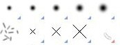
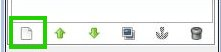
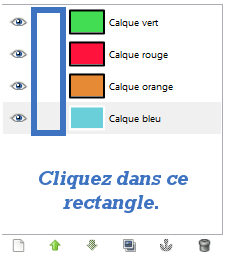
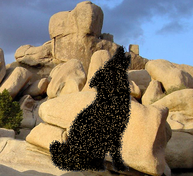
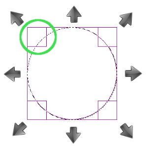

"Vous avez toujours rêvé de vous lancer dans le graphisme, de pouvoir retoucher vos photos ratées, d'être capable de réaliser de belles images comme celles que l'on peut voir sur le forum Graphisme ou tout autre site ?"
Alors ce tutoriel est pour vous ! Ne cherchez plus, j'ai ici tout ce qu'il vous faut pour y arriver. :)
Pourquoi GIMP et pas un autre ?
Il existe des tas de logiciels de 2D que vous pourrez facilement trouver sur Internet. Néanmoins, j'ai choisi GIMP car il est gratuit, disponible dans plusieurs langues dont le français et car il est puissant. Ensuite, je suis certaine que vous avez déjà entendu parler d'Adobe Photoshop. Vous le savez peut-être déjà, le prix de sa licence en fait un logiciel surtout réservé aux professionnels. De toute façon, que ce soit avec un logiciel ou avec un autre, votre chemin dans l'apprentissage de l'infographie sera le même. Donc, j'ai presque envie de dire, peu importe le logiciel. GIMP convient très bien et l'utiliser ne facilitera pas ou ne compliquera pas votre apprentissage. Personnellement, je trouve qu'Adobe Photoshop est aussi un très bon logiciel et si vous avez l'occasion de le tester, vous pourrez vous faire votre propre idée. Le but n'est pas de se lancer dans un interminable débat pour savoir lequel est le meilleur.
Qu'allons-nous apprendre dans ce big-tuto ?
Tout d'abord, je consacrerai beaucoup de chapitres à l'apprentissage de GIMP, le tout agrémenté de TP (Travaux Pratiques) car, si vous êtes ici, c'est que vous ne savez pas vous servir du logiciel. Ensuite, il y aura quelques parties axées sur la retouche d'image et le photo-montage, puis sur le webdesign. :)
Cette introduction vous a mis l'eau à la bouche ? En tout cas je l'espère, parce qu'on commence tout de suite ! :D
Bienvenue dans le premier chapitre du tutoriel. Ici commence l'aventure 2D. :)
Dans ce chapitre, nous allons faire les présentations avec GIMP. Nous ferons le tour de ses fonctionnalités et de ce que propose le logiciel. Beaucoup de vocabulaire au rendez-vous donc, mais ne vous inquiétez pas si vous ne retenez pas ou que vous ne comprenez pas tout. Tout sera expliqué le moment voulu dans le chapitre approprié.
Nous allons également l'installer ensemble. Comme cela, vous serez fin prêts pour attaquer sereinement la suite du cours. :)
Lorsqu'on utilise un logiciel ou une technologie, il est utile de connaitre l'histoire de notre nouvel outil. Vous pouvez passer directement à la partie suivante si ça ne vous intéresse pas, mais je vous recommande de la lire car c'est toujours ça de culture générale en plus.
Qu'est-ce que GIMP ?
"GIMP" (prononcé à l'anglaise Gu-i-mp, et pas J-i-mp s'il vous plait ! :p ) est en fait l'acronyme de GNU Image Manipulation Program, que l'on peut traduire de l'anglais par Programme GNU de manipulation d'images. Pour ce qui est de GNU, voici une définition prise sur Wikipédia:
Citation : Wikipédia
GNU est un système d'exploitation libre lancé en 1983 par Richard Stallman et maintenu par le projet GNU. Son nom est un acronyme récursif qui signifie en anglais « GNU's Not UNIX » (littéralement, « GNU n'est pas UNIX »).
En gros, GNU est basé sur les concepts et le fonctionnement d'UNIX, mais ce n'est pas UNIX. GIMP fait parti du projet GNU.
GIMP est un logiciel libre et gratuit de retouche et de création d'images matricielles. On le présente parfois comme l'alternative gratuite et libre à Adobe Photoshop. Pour ceux qui seraient intéressés par ce qu'est une image matricielle, voici une définition tirée de Wikipédia:
Citation : Wikipédia
Une image matricielle ou image en mode point (ou en anglais image « bitmap » ou « raster ») est une image numérique dans un format de données qui se compose d'un tableau de pixels ou de points de couleur, généralement rectangulaire, qui peut se visualiser sur un moniteur d'ordinateur ou tout autre dispositif d'affichage RVB
Pour faire simple, on peut dire qu'il existe plusieurs "familles" d'images différentes. Le matriciel est une "famille" d'image et le vectoriel en est une autre. Vous vous doutez bien qu'il existe quelques distinctions entre ces deux "familles". ;)
La grande différence entre une image matricielle et une image vectorielle réside dans la possibilité de les agrandir ou de les rétrécir à l'infini. Vous ne pouvez pas agrandir ou rétrécir une image matricielle sans perte de qualité (vous verrez apparaitre les pixels). Ce problème ne se pose pas avec les images vectorielles.
Toute à l'heure tu nous as parlé de logiciel libre et gratuit ? Ça veut dire quoi exactement ?
Bonne question. Il ne faut pas confondre gratuit tout court et libre et gratuit. Le mot "libre" apporte des autorisations supplémentaires sur le logiciel et son code source comme:
l'étude ;
la modification ;
la duplication ;
la diffusion du code source.
Le tout légalement. :)
Histoire et raison d'être de GIMP
Le projet GIMP a été créé en 1995 par Spencer Kimball et Peter Mattis, deux étudiants de l'université de Berkeley et, comme c'est parfois le cas pour les logiciels libres, pour d'abord répondre à leurs propres besoins. Il a été mis publiquement a disposition en 1996. A partir de là, il devient une référence du logiciel libre.
C'est un programme multi-plateformes (c'est à dire qu'il existe une version, entre autres, pour les trois principaux systèmes d'exploitation: Linux, Mac OS X et Windows) mais qui était à la base destiné aux systèmes UNIX et GNU/Linux ainsi qu'à Darwin (la base de Mac OS X). Il est d'ailleurs installé par défaut sur certaines distributions de Linux (comme Ubuntu, Debian, ...).
Pour clôturer cette partie, je vous propose de faire connaissance avec la mascotte de GIMP, car comme une foule de logiciels, GIMP dispose aussi d'une mascotte. Elle a subi quelques modifications au fil du temps et de la sortie des nouvelles versions de GIMP.
Je vous présente Wilber :D :
Sympathique, n'est-ce pas ? ^^ A droite, il s'agit de la représentation la plus récente de Wilber.
GIMP est souvent sous-estimé (à cause de sa gratuité, entre autres) et de son interface qui peut facilement décourager les débutants. Nous allons voir ici plus précisément de quoi il en retourne.
Je vous ai concocté un petit tableau regroupant les grandes fonctionnalités de GIMP. Tout n'y est pas, la liste serait bien trop longue et vous seriez noyés dans la masse d'informations. ^^ J'ai aussi rajouté des petites icônes pour illustrer mes propos. Vous pourrez retrouver presque la totalité de ces icônes dans le logiciel et vous aurez ainsi déjà une idée de leur fonction.
Icônes
Fonctionnalités
Gestion des calques.
Ribambelles d'outils de peinture (brosses, aérographe, pinceaux, ...).
Ribambelles d'outils de sélection (chemins, lasso, sélections polygonales, ...).
Gestion des dégradés et des textures.

Possibilité d'ajout de ressources (brosses, textures, ...).
Gestion d'une foule de formats pour tous les goûts (.JPG, .PNG, .GIF, .XCF, ...).
Dispose de son propre format conservant les calques (format .XCF).
Dispose de nombreux filtres et d'un système de greffons (pour ajouter des fonctionnalités).
Gère plusieurs modes colorimétriques (RVB, niveaux de gris).
Dispose de nombreux outils de redimensionnement, de rotation, de retournement, etc.
Vous voyez qu'il y a de quoi faire. Et je le répète, ce n'est pas tout. Nous aurons le temps de découvrir bien d'autres choses dans la suite du tutoriel. Je ne vais pas tout vous dévoiler maintenant. Mais si vous voulez vous faire une idée, sachez qu'il est possible de quasiment tout faire avec un peu d'expérience et de réflexion. :)
Voici quelques liens où vous pourrez découvrir des créations réalisées sous GIMP:
Projet Big Buck Bunny et projet Elephant dream. Attention, GIMP n'est pas le seul logiciel à avoir participé aux projets. Le "plus gros" du travail (si je peux m'exprimer ainsi) a été réalisé par un logiciel d'animation 3D libre: Blender. GIMP n'est donc pas totalement à l'origine de ces animations et de ces belles images. Ce que je veux dire par là, c'est que ne vous attendez pas à réaliser quelque chose de ce genre avec GIMP. Il est avant tout un logiciel d'édition d'images 2D. Si vous souhaitez accomplir un projet de ce type, vous devrez vous tourner vers un logiciel d'animation 3D. :) ;
Si vous voulez plus de sites pour voir ce que GIMP a dans le ventre, je regrouperai dans l'annexe plus de liens que vous pourrez consulter au cours de votre apprentissage.
Maintenant que vous êtes convaincus, avant de continuer, il faudrait peut-être installer GIMP, non ? :p
A l'heure où j'écris ces lignes, la dernière version stable de GIMP est la 2.6.x et la dernière version disponible est la 2.6.11.
Installation sous Windows
Version classique
C'est la version que vous risquez de choisir si vous travaillez sur votre PC. GIMP s'installe directement sur le disque dur de votre machine. C'est la version que je vous recommande si vous travaillez sur votre propre ordinateur, car elle a tendance à être plus stable que la version portable. Après, à vous de voir selon vos possibilités.
Quelles différences y a-t-il entre la version classique et la version portable ?
Théoriquement, ces versions sont les mêmes. Cependant, vous pouvez en avoir besoin en fonction des raisons que j'énonce plus bas. Un peu de patience. :)
Pour télécharger GIMP pour Windows, rendez-vous sur cette page. Cliquez sur le lien Download dans le cadre GIMP for Windows.
L'installation est classique comme pour n'importe quel autre programme. Lancez l'exécutable et suivez les indications à l'écran. Il vous faut normalement saisir l'emplacement destiné aux fichiers d'installation. Je vous conseille de laisser le chemin par défaut.
Version portable
La version portable sert à être installée sur un support externe comme une clé USB ou un CD. Cela peut s'avérer utile si vous n'êtes pas sur votre ordinateur personnel ou que vous souhaitez utiliser GIMP sur un autre ordinateur sans toucher au disque dur (lycée...). Cela vous permet également d'avoir toujours avec vous votre logiciel préféré.
Pour la télécharger cliquez ici. L'installation est la même que pour la version classique, sauf que vous devez indiquer comme emplacement d'installation un support externe et non pas votre disque dur.
Installation sous GNU/Linux
GIMP est présent par défaut dans la plupart des distributions de Linux. Si toutefois ce n'est pas le cas chez vous, je vais détailler la procédure. ;)
Si vous êtes comme moi sous Ubuntu, ouvrez la Logithèque et tapez Gimp dans le champ de recherche. Il vous suffit ensuite de cliquer sur Installer.
je ne sais pas comment cela se passe pour les autres distributions de Linux. Si votre distribution dispose d'une logithèque, il vous suffit de faire la même chose que pour Ubuntu. Sinon, regardez la procédure que j'ai placé en Secret (car elle contient du code et peut en effrayer certains).
Ouvrez un terminal et taper une des lignes de commandes ci-dessous selon votre distribution:
Sous Ubuntu et Debian:
apt-get install gimp
Sous Mandriva:
urpmi gimp
Sous Fedora/Red Hat:
yum install gimp
Et enfin sous SuSE, il y a deux possibilités selon la version de votre ditribution:
zypper in gimp
ou
yast -i gimp
C'est aussi simple que cela ! ;)
Installation sous Mac OS X
Sous Mac OS X, GIMP requiert l'environnement X11 d'Apple pour fonctionner. En gros, cet environnement permet à Mac OS X d'utiliser des programmes re-compilés, créés à la base pour les systèmes UNIX. Normalement, X11 est déjà fourni avec Mac. Si toutefois ce n'est pas le cas chez vous, je vous invite à le télécharger à cette page.
Maintenant que vous êtes sûrs que votre système est près à accueillir GIMP, téléchargez le ici. Cliquez sur le lien qui correspond à votre version et installez-le comme n'importe quel autre programme classique.
Voilà ! Vous avez maintenant un GIMP tout neuf et tout beau qui ne demande qu'à être utilisé ! Rendez-vous au chapitre suivant où nous allons découvrir son interface et beaucoup d'autres choses. Mais avant, je vous ai préparé un petit Q.C.M. :ninja:
GIMP étant installé, vous pouvez passer sereinement au chapitre suivant où nous allons découvrir ensemble son interface. :)
Dans ce chapitre, nous allons découvrir l'interface de GIMP pas à pas. Je sais que son interface peut dérouter au début, surtout si vous êtes sous Windows, car vous pouvez trouver son gestionnaire multi-fenêtres peu accueillant, étant habitué aux programmes mono-fenêtres. Ne vous inquiétez pas, nous allons y aller doucement et je vais essayer d'être le plus clair possible dans mes explications pour ne perdre personne.
Nous découvrirons aussi comment créer et enregistrer votre première image. :)
Avant de commencer, je ne peux que vous inviter à ouvrir GIMP et à faire les manipulations en même temps que moi. Cela vous fera pratiquer et on ne le dira jamais assez: la pratique c'est important. Si vous vous contentez de seulement lire le cours sans tester par vous-même, c'est comme si vous n'aviez pratiquement rien fait. :-°
Tout d'abord ouvrez GIMP. Vous allez obtenir une fenêtre comme celle-ci:
Le temps de charge peut être assez long si c'est la première fois que vous l'ouvrez.
Ensuite, vous allez arriver sur une fenêtre comme ci-dessous. Bienvenue dans GIMP !
Je vais vous détailler l'interface pas-à-pas.
1:Fenêtre principale : c'est ici que tout se passe. Votre image apparaitra ici et c'est là que vous travaillerez la plupart du temps. C'est pour cela que c'est aussi la plus grande. Elle est là pour accueillir votre travail et le canevas, dont nous reparlerons plus tard.
2:Barre d'outils : barre très importante regroupant toutes les fonctionnalités de GIMP. Cliquez sur les différents menus pour voir un peu tout ce qu'il y a. Vous pouvez accéder à toutes les options à partir de cette barre. Comme beaucoup de logiciels, c'est un peu le "cœur" du programme.
3:Boîte à outils : Elle regroupe tous les outils dont nous aurons besoins: crayons, pinceaux, gomme, et toute l'artillerie ! C'est une fenêtre que vous pouvez supprimer, on appelle ce genre de fenêtre des fenêtres ancrables. Néanmoins je vous conseille fortement de la laisser, car vous verrez par la suite à quel point c'est utile d'avoir tout à porté de main et de ne pas devoir aller tout chercher dans les menus. Imaginez cette fenêtre comme une "trousse géante". ;)
4:Boîte de calques : fenêtre très importante qui regroupe les calques mais pas seulement. Elle regroupe aussi les brosses, les textures, les dégradés, les canaux, l'historique d'annulation et les chemins. Comme la boîte à outils, vous pouvez l'enlever car elle est ancrable, mais je vous conseille également de la laisser car nous nous en servirons beaucoup.
J'ai supprimé par mégarde la boîte à outils et la boîte de calques. Comment puis-je les remettre ? :o
Ce n'est pas bien grave. Cliquez dans la barre d'outils sur Fenêtres > Boîtes à outils ouFenêtre > Calques, Canaux, Annuler, Chemins - Brosses, Motifs, Dégradés pour remettre au besoin la boîte à outils ou la boîte de calques.
Familiarisez vous avec l'interface en touchant un peu à tout. C'est comme cela qu'on apprend. Vous allez comprendre peu à peu l'utilité des fenêtres ancrables, et bientôt vous ne pourrez plus vous en passer.
Si toutefois l'interface vous parait trop bizarre, essayez d'imaginer les trois fenêtres comme un tout ou comme une seule fenêtre. Vous verrez, bientôt cela vous paraitra naturel.
Cliquez sur la miniature pour l'agrandir.
Maintenant que vous êtes plus familiers avec l'interface de GIMP, nous allons voir comment la personnaliser un petit peu. ;)
Il existe des tas de façons différentes d'organiser son interface dans le but de travailler dans des conditions optimales. Il n'y a rien de pire qu'un espace de travail mal organisé et mal rangé. Nous allons découvrir ensemble comment le ranger de manière appropriée pour suivre le cours. Mais avant, il est nécessaire de vous apprendre un peu de vocabulaire.
Cliquez sur l'image pour l'agrandir.
L'ensemble du logiciel constitue votre espace de travail tandis que la page blanche au milieu représente le canevas. J'entends par "l'ensemble du logiciel", toutes les fenêtres, fenêtres ancrables incluses.
L'espace de travail regroupe tous vos outils, vos calques, vos couleurs, vos motifs, vos dégradés. En gros, il s'agit de votre trousse géante qui vous permettra de travailler comme il faut.
Le canevas, quant à lui, constitue votre support où vous allez travailler. Tous les outils de l'espace de travail, vous allez les utiliser sur le canevas. Imaginez-le comme une feuille de papier sur laquelle vous pouvez peindre, dessiner, coller, découper, bref travailler. ;)
L'ensemble du canevas est délimité par des traits en pointillés jaunes et noirs.
Composer son espace de travail
Avant de commencer à travailler avec GIMP, il serait bon de l'agencer de manière optimale, pour travailler dans de bonnes conditions. Je vais vous montrer comment moi j'organise mon propre espace de travail, libre à vous de me suivre ou non. Je vous conseille toutefois de faire pareil que moi, histoire d'avoir les mêmes choses que moi sur les captures. Cet espace de travail est aussi là pour faciliter la vie en tant que débutant. C'est donc dans votre intérêt. :)
Je vais tout d'abord vous montrer l'espace de travail auquel nous souhaitons arriver:
Cliquez sur l'image pour l'agrandir.
Il y a du changement ! Vous pouvez remarquer deux choses: 1. Les fenêtres ancrables sont restées à leur place, ainsi que le canevas. Il n' y a pas de changements de ce côté là. 2. Tous les changements ont été opérés dans la partie inférieure de la boîte de calques.
Quatre nouveaux onglets ont fait leur apparition dans cette fenêtre ancrable. Ces onglets contiennent des outils qui ne sont pas présents dans la boîte à outils. Ils vont nous permettre de travailler plus rapidement et de manière efficace. Avoir ces outils à porter de main est vraiment un gain de temps. Je vais vous présenter brièvement dans un tableau récapitulatif à quoi sert chaque onglet spécifiquement, car je dois tout vous expliquer à partir de zéro. Nous n'aurons pas besoin de ces outils tout de suite, c'est juste pour l'explication. :)
Nom
Illustration
Description
Couleurs
Cet onglet vous permet de sélectionner facilement une couleur. Il est similaire à l'outil "normal" de sélection de couleurs de GIMP, que nous verrons plus tard. Il s'agit ici juste d'un raccourci, que vous pourrez utiliser de la même manière que l'outil "standard".
Outils
Cet onglet regroupe tous les outils déjà présents dans la boîte à outils, ainsi que d'autres outils qui n'apparaissent pas dans cette fenêtre ancrable ! Ces "nouveaux" outils, sont évidemment disponibles à partir de la barre de menus, mais les avoir à porter de main dans un petit onglet est beaucoup plus pratique.
Afficher la navigation
Voilà un onglet très utile ! Il vous montre un aperçu du canevas en temps réel et il vous offre une nouvelle manière de zoomer. Nous reparlerons de tout cela plus en détails le moment venu. Je ne vous en dit pas plus, sinon il n'y aurait plus de suspense. :p
Palettes
Cet onglet regroupe plusieurs palettes de couleur. Une palette de couleur, entre autres, est constituée de plusieurs couleurs selon un thème qui est propre à la palette. Par exemple, vous pouvez avoir une palette de bleus, de rouges, ou de couleurs plus excentriques ! Cet outil vous sera utile pour retrouver facilement une couleur.
Même si vous ne comprenez peut-être pas bien la différence avec l'onglet Couleurs, vous verrez que cela vous paraitra plus évident lorsque vous apprendrez à vous en servir. :)
Au travail !
Il est temps de paramétrer l'espace de travail pour appliquer tous ces changements. En gros, nous devons rajouter quatre onglets. Nous allons commencer par l'onglet Couleurs. Observez bien la partie inférieure de la boîte de calques. Voyez-vous cette petite flèche
? Je veux évidemment parler de cette flèche là:
Cliquez dessus. Un menu s'affiche. Cliquez sur Ajouter un onglet. La liste de tous les onglets que l'on peut ajouter apparait. Il vous suffit de cliquer sur Couleurs. Normalement, l'onglet est désormais disponible.
Parfait ! :D
Il faut refaire maintenant la même manipulation pour les trois autres onglets restants. Vous devez toujours cliquer sur la petite flèche
, puis Ajouter un onglet et enfin sur le nom de l'onglet à ajouter. Il vous faut rajouter ces onglets là:
Outils
Afficher la navigation (peut aussi apparaitre sous le nom de "Navigation" tout court selon les versions)
Palettes
Voilà, vous avez maintenant un espace de travail adapté. Ces onglets vont vous faciliter la vie, vous verrez (je me répète, moi ? :-° ).
J'ai décidé de clôturer ce chapitre en vous montrant comment créer et enregistrer une nouvelle image. Comme cela, vous pourrez commencer à faire vos propres tests. Vous l'avez deviné, sans image, on ne peut pas travailler. La procédure de création et d'enregistrement mérite d'être détaillée, car on peut vite se perdre dans toutes les options disponibles la première fois. Sachez que toute nouvelle image créée sera ouverte dans le canevas, c'est-à-dire au centre de l'espace de travail (juste un petit rappel ;) ).
Créer une nouvelle image
Pour créer cette fameuse image, il faut vous rendre dans la barre d'outils et cliquez sur Fichier > Nouveau.
Raccourci clavier
Ctrl + N
Pomme (ou Command) + N
Vous obtenez une fenêtre comme celle-la :
Comme vous pouvez le remarquer, il y a beaucoup d'options à prendre en compte pour notre future image de test. Nous allons les détailler ensemble. Pour une présentation plus propre et plus claire, je vous propose de vous expliquer cela sous forme de tableau. Je traite les options de haut en bas et de gauche à droite.
Paramètre
Signification
Modèle
GIMP met à votre disposition des modèles de documents pré-créés. Les dimensions sont déjà pré-définies et vous n'avez plus qu'à vous servir de ces modèles pour éviter à avoir à rentrer de nouveau les données. Par exemple, vous pouvez avoir des images aux formats A4, A3 ou encore d'autres formats adaptés au webdesign. Nous verrons comment créer nos propres modèles plus loin dans le cours.
Largeur et Hauteur
Comme vous l'avez deviné, ce sont les dimensions de l'image. Regardez à quoi correspond chaque terme:
D'ailleurs, notez que pour annoncer les dimensions d'une image, on utilise une manière particulière. Au lieu de dire "La largeur du document est de 800 pixels et sa hauteur est de 400 pixels", les infographistes préfèrent dire "Les dimensions du document sont de 800*400 pixels". Il faut annoncer en premier la largeur. Cette autre façon permet de gagner du temps et d'éviter de faire une phrase trop longue.
Pixels
"px" signifie pixels. Il s'agit de l'unité de mesure de la largeur et de la hauteur du document. Comme vous l'avez compris, ces longueurs se mesurent à l'aide d'une unité. Il existe tellement d'unités différentes qu'il faut préciser à chaque fois à l'aide de quelle unité nous effectuons nos mesures. Elle permet d'être sur la même longueur d'onde, en quelque sorte, car notre longueur peut très bien être exprimée en pixels, en centimètres ou même en patates, ce qui ne nous arrangerait pas. :-° Nous reviendrons sur tout cela plus loin dans le cours, patience.
Format
Votre image doit-elle être tenue au format Portrait ou au format Paysage ? C'est ici que vous devez le préciser ! Ce paramètre n'est pas forcément utile dans la mesure où vous pouvez définir manuellement la largueur et la hauteur de votre document. Il devient cependant plus utile lorsque vous utilisez un format prédéfini, comme une lettre par exemple.
A gauche, l'enveloppe est tenue au format Portrait tandis qu'à droite, elle est tenue au format Paysage.
Résolution X et Résolution Y
Ici, vous devez indiquer la résolution des axes X et Y. Ce petit schéma devrait vous aider à mieux comprendre la notion d'axes X et Y.
Pour ce qui est de la résolution, j'en parle plus loin dans le cours. Sachez juste que ce paramètre influencera la qualité finale de l'image, surtout au moment de l'impression. Les réglages par défaut conviennent bien pour nos tests, donc il n'est pas nécessaire de s'en soucier pour le moment.
Pixels/in
La résolution est elle aussi exprimée avec une unité. Elle sert en gros à déterminer combien il y a de pixels par portion d'image bien définies. Laissez l'option par défaut, nous étudierons plus tard cette notion de "pixels par portion d'image".
Espace de couleurs
Ici, vous devez indiquer le mode colorimétrique de votre future image. Je vois déjà de là vos têtes surprises devant ce terme un peu barbare. :p Pour faire simple, deux options vous sont proposées:
Couleur RVB
Niveaux de gris
Ainsi, vous pouvez déterminer le type de couleurs que vous souhaitez utiliser dans votre image. Si vous souhaitez travailler en couleur (avec toutes les couleurs de l'arc-en-ciel et leurs nuances), choisissez Couleur RVB. Au contraire, si vous désirez plutôt travailler avec une image totalement en noir et blanc (sans aucune couleur donc), choisissez Niveaux de gris. Je détaillerais ces notions plus loin dans le cours. Je vous le précise juste pour que vous ne fassiez pas de bêtises. En effet, j'ai vu des débutants se demander pourquoi aucune couleur de s'affichait et pourquoi leur image était toute grise ...
Remplir avec ...
Il vous faut définir le type de fond que votre future image aura ! Certes, vous pourrez le changer par la suite, mais il faut qu'elle ait déjà un type de fond dès sa création. Vous avez le choix entre:
Couleur de premier plan ;
Couleur d'arrière-plan ;
Blanc ;
Transparence.
Dans la majorité des cas, vous serez amené à remplir votre image avec un fond Blanc, car c'est le plus pratique et le plus adapté lorsqu'on débute. Les remplissages Couleur de premier plan et Couleur d'arrière-plan font référence aux couleurs du même nom que nous apprendrons à sélectionner. Le fond sera remplie de la couleur de premier plan ou d'arrière-plan actuellement sélectionnée dans l'éditeur de couleur. C'est au programme plus loin.
Pour ce qui est du remplissage Transparence, je crois que vous avez compris. Il s'agit d'un fond transparent, idéal pour les logos et autres.
Commentaire
Vous permet d'ajouter un petit commentaire qui sera visible dans les propriétés finales de l'image (autrement dit, tout le monde pourra voir ce petit commentaire, donc ne mettez pas n'importe quoi :-° ).
Voilà, nous avons tout passé en revue. Je vous propose donc de mettre en pratique ce que vous venez de voir en créant votre première image ! Pourquoi ne pas utiliser ces paramètres là pour nos tests ?
Modèle: aucun (ne sélectionnez rien) ;
Largeur: 600 px ;
Hauteur: 500 px ;
Unité: le pixel donc ;
Format: Paysage ;
Résolution X et Résolution Y: 72.000 pixels/in (options par défauts)
Espace de couleurs: Couleur RVB ;
Remplir avec: Blanc ;
Commentaire: mettez ce que vous voulez ou laissez le commentaire par défaut.
Voilà ce que ça donne dans l'espace de travail. :)
Cliquez sur la miniature pour l'agrandir.
Bonne nouvelle, vous êtes désormais capable de créer une nouvelle image sous GIMP. Vous pouvez vous en servir pour faire quelques tests et essayer les différents outils.
Enregistrer une nouvelle image
Pour enregistrer votre image fraîchement créée, c'est très simple. Rendez-vous dans la barre d'outils et faites Fichier > Enregistrer.
Raccourci clavier
Ctrl + S
Pomme (ou Command) + S
Une fenêtre comme celle-ci apparait:
Je vous épargne la lecture d'un long tableau descriptif des options pour cette fois. Regardez bien la capture, j'ai encadré en vert ce qu'on appelle l'arborescence des dossiers. Les utilisateurs de GNU/Linux, sont habitués à ce genre d'arborescence.
Mais bon sang qu'est-ce que c'est encore ce truc ?
L'arborescence indique un chemin, dans notre cas le chemin de sauvegarde de l'image. Si vous venez de Windows, vous avez plutôt l'habitude de voir des chemins du style: C:\Mes documents\Mon dossier. GIMP étant apparu sous GNU/Linux, il a gardé sa manière "linuxienne" d'afficher les chemins.
Alors pour comprendre ce genre d'arborescence, il existe quelque chose de très simple qu'il faut retenir: chaque petit rectangle correspond à un dossier. A partir de là, avouez que c'est extrêmement simple. ^^ Si sous Windows, j'ai un chemin comme: C:\Mes images\Mes photos de vacances\Londres\Printemps 2010, il donnera avec ce genre d'arborescence quelque chose du type: \Mes imagesMes photos de vacancesLondresPrintemps 2010.
Revenons à nos moutons ! A gauche, vous avez vos principaux disques (disque local, supports externes, ...). A droite, vous trouvez vos différents dossiers. Vous pouvez naviguer à travers vos dossiers pour arriver à l'emplacement souhaité.
Lorsque vous êtes enfin dans le bon dossier, tapez le nom de votre image.
Puis, donnez l'extension .XCF à votre image en la réécrivant derrière son nom (n'oubliez pas le point devant XCF !). N'oubliez pas non plus de préciser à chaque fois l'extension car cela ne se fait pas automatiquement comme sous certains autres logiciels !
Attends une minute, une extension, c'est quoi ?
Je répondrai plus clairement à cette question dans le chapitre approprié plus loin dans le cours. Retenez simplement pour l'instant que l'extension va définir le format du fichier que vous souhaitez enregistrer. Pour des textes, selon le logiciel, on peut donner des extensions comme .DOC ou .TXT, pour des fichiers sources de programmation on donnera plutôt des extensions comme .C ou .H. Sous Windows, les programmes ont l'extension .EXE.
Dans notre cas, le format .XCF est le format des fichiers GIMP. Il conservera vos calques, canaux, chemins, sélections actives, couleurs, etc ... C'est le format idéal pour enregistrer une image en cours d'édition. Les autres formats d'image sont au programme évidemment.
Mais on s'égare là ... Une fois que vous avez renseigné le nom et l'extension de votre image, cliquez sur Enregistrer.
Et Tadaaaa ! :magicien: Votre image est enregistrée dans un lieu sûr ! Servez-vous de ce fichier .XCF pour faire vos propres tests en essayant les outils. Nous les verrons plus en détails par la suite mais vous pouvez déjà commencer à les essayer "pour voir ce que ça fait".
Sur ce, passons au Q.C.M.
Maintenant que l'interface ne vous fait plus peur, vous pouvez passer sereinement au chapitre suivant. :)
Les calques, nous y voilà enfin ! Cette notion est peut-être un peu obscure pour vous. Vous en avez sans doute déjà entendu parler, mais vous ne savez toujours pas ce que c'est... Ne vous inquiétez pas, j'ai préparé un chapitre entier pour vous l'expliquer. :)
Vous allez voir, les calques ça change la vie ! C'est tout ce qui fait la puissance de GIMP. Les calques et leurs multiples options permettent d'arriver à des résultats surprenants.
Une fois que vous maitriserez les calques, essayez pour voir, de faire une petite création sous un logiciel ne gérant pas les calques (comme Paint), vous allez voir à quel point cela peu devenir vite frustrant ! :lol:
Commençons par la question qui vous brûle les lèvres: "Qu'est-ce qu'un calque, bon sang ?"
Pour cette fois, je ne vais pas vous sortir une définition de Wikipédia, car parfois, elles sont trop complexes et on ne les comprend pas forcément. Or, il faut que vous compreniez ce qu'est un calque. Je vais donc vous expliquez tout cela à partir d'un exemple.
Imaginez que vous souhaitiez dessiner une fleur. Comment allez vous vous y prendre ? Vous allez d'abord dessiner le cœur, puis un à un chaque pétale. Ensuite vous rajouterez la tige et ... MALHEUR ! Votre tige déborde affreusement sur vos pétales ! Pour effacer cette bavure, il vous faut aussi effacer les pétales et les recommencer ! Et voilà: des heures de travail gâchées.
N'existe-t-il pas un moyen plus simple de rattraper tout ça ? :o
Et bien si ! C'est là qu'interviennent les calques.
Imaginez les calques comme des ... feuilles de papier calque (très original, je vous l'accorde :D ). Sur chaque feuille, vous allez dessiner quelque chose. Ensuite, vous superposerez les feuilles dans le bon ordre et vous obtiendrez votre image finale. C'est ça ce qu'il faut comprendre: un calque peut être associé à une couche comportant une partie de votre image.
Si vous aviez utilisé les calques pour l'exemple de la fleur, vous auriez dessiné le cœur sur un calque, les pétales sur un autre calque et la tige encore sur un autre calque. Chaque calque étant indépendant, vous pouvez modifier un calque sans toucher aux autres, et donc sans altérer ce qui se trouve sur les autres calques.
En résumé:
1. Vous créez vos calques ; 2. Vous dessinez chaque partie de votre image indépendamment sur vos calques ; 3. Les calques se superposent et vous n'avez plus qu'à admirer le résultat.
Voici un petit exemple en images. Imaginez que vous avez deux photos: un palmier et un paysage.
Nous allons utiliser les calques pour monter le palmier sur le paysage.
Voilà l'image finale:
Le calque du paysage n'est pas modifié par le palmier puisque le palmier se trouve sur un calque indépendant. La preuve, si on déplace le palmier, le paysage qui était sous le palmier est comme neuf ;) :
Les calques sont utiles pour faire des réajustements et des montages, comme je vous l'ai expliqué plus haut.
J'espère que vous êtes convaincu, car sans les calques, vous aurez beaucoup de mal à faire quelque chose d'abouti avec GIMP (ou avec n'importe quel autre logiciel de 2D d'ailleurs). Voyons tout de suite comment créer ces fameux calques.
Vous vous souvenez de la boîte de calques dont je vous avais parlé précédemment ? En tout cas je l'espère, car nous allons beaucoup l'utiliser et nous allons voir comment nous en servir, du moins en ce qui concerne les calques (car elle ne fait pas que gérer des calques). C'est à partir de cette fenêtre ancrable que nous pouvons créer, supprimer et paramétrer nos calques.
Créer un calque
Il existe plusieurs méthodes pour créer un calque. Vous pouvez notamment:
Cliquer dans Calques dans la barre d'outils puis sur Nouveau calque.
Cliquer sur ce bouton dans la boîte de calques:

Raccourci clavier
Shift + Ctrl + N
Shift + Pomme (ou Command) + N
Quelle que soit la solution que vous avez choisie, une fenêtre comme celle-ci apparait.
Elle vous permet de définir de manière très précise tous les paramètres de vos calques, en passant par la taille, jusqu'au style de remplissage. Je vais vous détailler toutes ces options, comme d'habitude, sous forme de tableau pour une meilleure lisibilité.
Paramètre
Signification
Nom du calque
Comme vous l'aurez deviné, il s'agit du nom du calque. Pensez à donner des noms clairs à vos calques pour une meilleure lisibilité et que les gérer soit plus facile pour vous. Je sais que cela peut paraitre futile, mais vous vous rendrez très vite compte, à court terme, à quel point avoir des calques avec des noms ambigus peut vite devenir frustrant et problématique.
Largeur
Il s'agit de la largeur du calque.
Hauteur
Il s'agit de la hauteur du calque.
px
"px" signifie pixels. Il s'agit de l'unité de mesure de la largeur et de la hauteur de votre calque (car sans unité on ne va pas très loin. Il peut très bien s'agir de centimètres, de pixels, de pouces, ...).
Type de remplissage de calque
Lorsque vous créez un nouveau calque, il vous faut choisir de quoi vous souhaitez le remplir, une sorte de fond si vous préférez. Vous avez le choix entre plusieurs options. Les options Couleur de premier plan et Couleur d'arrière-plan fonctionnent grâce aux couleurs de premier plan et d'arrière-plan que nous verrons plus tard. L'option Blanc remplit votre calque d'une couleur blanche. L'option Transparence permet de laisser le fond du calque transparent.
Je vous conseille de laisser les valeurs par défaut pour commencer. Changer simplement le nom de votre calque (nommez le par exemple "Test") et assurez vous que c'est bien Transparence qui est sélectionnée comme Type de remplissage de calque.
Au secours ! Je ne sais pas quelle taille donner à mon calque !
Je vous conseille de laisser l'option par défaut, c'est à dire la taille de votre canevas. Si vous donnez à votre calque des dimensions plus petites que celles de votre canevas, vous risquez d'avoir des problèmes. Vous ne pourrez pas dessiner sur tout le canevas car le calque sera trop petit. Je vous conseille donc de toujours laisser la même taille que celle de votre canevas, c'est à mon sens plus pratique.
Ainsi, vous êtes sûr de travailler avec des calques bien paramétrés. En résumé, sauf pour des cas exceptionnels, je vous conseille comme options:
Nom du calque: un nom clair permettant de facilement identifier votre calque ;
Largeur et Hauteur: laisser l'option par défaut, à savoir la taille de votre canevas pour éviter tout souci ;
Unité: le pixel (px), c'est quand même plus pratique ;
Type de remplissage de calque: Transparence.
Supprimer un calque
Pour supprimer un calque, il existe deux manières différentes, tout comme pour sa création:
Sélectionnez le calque que vous souhaitez supprimer. Allez dans la barre d'outils et cliquez sur Calque puis sur Supprimer le calque.
De même, sélectionnez le calque que vous souhaitez supprimer et cliquer sur ce bouton dans la boîte de calque:
Comme vous l'avez sans doute remarqué, une liste de boutons est disponible dans la boîte de calques. Au cas où vous auriez déjà oublié, nous en avons déjà vu deux d'entre eux. Je vous propose de voir à quoi servent les autres, histoire d'étendre nos possibilités de travail.
L'ordre des calques
Lorsque vous créez un nouveau calque, il se place automatiquement par défaut au-dessus du calque sélectionné. Or, il se peut que l'ordre actuel des calques ne vous convienne pas (même si ce n'était pas le cas, on va faire comme si, sinon mon exemple tombe à l'eau :-° ). Car, comme vous le savez, l'image finale est vue du haut de la pile de calque. Donc l'ordre de nos calques a un rôle déterminant sur l'image finale. Il faut donc ranger notre pile avec soin pour éviter les mauvaises surprises !
Je vous ai concocté un fichier .XCF avec une pile de calque désorganisée qu'il va nous falloir ranger. Observez bien l'ordre des calques actuels. Voici le nouvel ordre auquel nous souhaitons arriver:
Bouton 1
Bouton 2
Bouton 3
Bouton 4
Pour se faire, il faut utiliser les petites flèches en bas dans la boîte des calques.
Sélectionnez simplement le calque à déplacer, puis utiliser la flèche du haut pour le monter ou la flèche du bas pour le descendre.
Voici le résultat final. Cliquez sur la miniature pour l'agrandir.
On ne peux pas faire plus simple.
Dupliquer un calque
Savez vous qu'il est possible de faire un copier/coller d'un calque ?
Comment ça un "copier/coller" ?
Il est possible de copier un calque et de la coller avec les autres calques dans la pile de calques. Si par exemple je copie le calque "Tour", la copie apparaitra avec un nouveau nom:
"Copie de Tour"
Vous pouvez bien évidemment le renommer par la suite. Alors, pourquoi copier un calque ? (après tout, pourquoi s'ennuyer ? )
Certaines manipulations de GIMP ne prendront forme et ne seront réalisables qu'à partir des copies d'un calque.
Tester une manipulation (ou un outil) est une expérience dangereuse dans un projet volumineux et très avancé. Travailler sur une copie du calque dédié à l'expérience est une forme de sécurité. En effet, si l'expérience tourne mal, on supprime le calque en question et tout redevient comme avant.
Par simple bonheur d'encombrer la pile de calque. :D
Donc, si je veux dupliquer (synonyme de "copier") un calque, je clique sur le bouton
prévu à cet effet en bas dans la boîte de calques. Et hop, après cette manipulation, la copie s'affiche clairement dans la pile de calque.
Voici l'emplacement de ce bouton dans la boite des calques. Je fais la capture car je sais que ceux qui ne sont pas sous Windows risquent de ne pas avoir la même icône.
Raccourci clavier
Shift + Ctrl + D
Shift + Pomme (ou Command) + D Je peux évidemment maintenant me servir de cette copie comme d'un calque normal. Je peux donc l'éditer, la modifier, la renommer, la supprimer, ...
Rendre un calque (in)visible
Les calques, à l'image de l'Homme Invisible ( :D ), peuvent aussi disparaitre de votre champ de vision. Sérieusement, vous pouvez rendre invisible un calque, puis le rendre visible de nouveau.
Mais, on a déjà l'option Supprimer pour enlever un calque de la pile de calque !
Vous faites fausse route. Attention: lorsque vous rendez invisible un calque, même si vous ne le voyez plus sur le canevas, il reste toujours présent dans la pile de calque. Au contraire, supprimer un calque le retire de la pile de calque ! Il vous faut bien saisir la différence. Rendre invisible un calque revient à l'enlever momentanément du rendu affiché sur le canevas et malgré tout, il reste présent dans la pile de calque.
Voyons tout de suite comment cela fonctionne. Avez-vous remarqué cet œil ?
Vous pouvez le trouver à gauche de chaque calque. Et bien figurez vous qu'il permet de rendre un calque (in)visible.
N'hésitez pas à télécharger l'exercice que je vous propose afin de vous exercer. Vous voyez que ce fichier XCF est constitué de trois calques contenant respectivement un néon bleu, un néon jaune et un néon vert. L'exercice consiste à rendre le néon jaune invisible. Pour cela, rien de plus simple, il suffit de cliquer sur l'icône en forme d'œil à côté du calque du néon jaune.
Cliquez sur l'image pour l'agrandir.
Voilà le travail. :)
On peut faire de même avec le néon bleu. Remarquez maintenant l'absence de cette icône à côté des calques des néons jaune et bleu:
Si je souhaite les rendre visibles de nouveau, il me suffit de réactiver l'œil en cliquant à l'endroit où il se trouvait (c'est-à-dire toujours à gauche du calque concerné).
Verrouiller le canal alpha
Tout d'abord, laissez moi vous expliquer ce qu'est un canal alpha, car là, le titre ne doit pas trop vous parler. Dans GIMP, toute image ayant des pixels transparents (pixels totalement transparents ou semi-transparents, qui vont donc laisser apparaitre le fond sur lequel ils sont posés) comporte un canal alpha. On parle aussi parfois de couche alpha, les deux termes existent pour la même notion.
Est-il possible d'avoir une image ne comportant aucun pixel transparent mais étant tout de même dotée d'une couche alpha ?
En pratique, ajouter un canal alpha demande une manipulation en plus dans GIMP, donc on préfère rajouter cette couche uniquement si elle va nous servir. Il m'est arrivé parfois d' enregistrer des images avec un canal alpha inutilisé. :-°
Au moment de l'enregistrement, tout dépend du format d'image que vous choisissez. Si vous choisissez un format ne supportant pas de canal alpha (comme le JPEG dont nous reparlerons plus tard), le canal alpha ne sera pas enregistré et vous perdrez cet effet de transparence.
Donc, verrouiller le canal alpha revient à protéger tous les pixels transparents ou semi-transparents. Vous ne pourrez plus les modifier, c'est-à-dire que vous ne pourrez plus les colorier, les effacer, etc. Nous verrons plus tard quelques situations où le verrouillage du canal alpha peut nous être utile.
Pour verrouiller le canal alpha, il vous faut cocher la petite case à côté de cette icône
.
Je ne vous propose pas d'exercice pour cette fois, car à notre niveau nous ne verrions pas la différence car il faut essayer de modifier les pixels un minimum pour remarquer l'effet.
Modifier l'opacité
L'opacité, c'est exactement l'inverse de la transparence. Rien de mieux qu'un exemple pour illustrer mes propos. Prenons cette image:
Si je pose un voile bleu opaque par dessus, logiquement l'image située en dessous ne sera plus visible, car le voile bleu ne laissera pas passer la lumière.
Cet exemple servant d'introduction, je vous propose de télécharger le fichier XCF où je vous ai regroupé dans des calques ce même voile bleu et cette photo. :)
Pour comprendre le phénomène d'opacité, nous allons modifier l'opacité du voile bleu avec GIMP. Sélectionnez le calque "Voile bleu". Il faut maintenant aller voir de ce côté-ci, dans la partie supérieure de la boîte de calque:
Cette réglette vous permet de modifier l'opacité du calque. Plus le curseur est vers la droite, plus le calque sera opaque. Au contraire, plus le curseur est vers la gauche, moins le calque est opaque et donc plus il est transparent. Vous pouvez aussi rentrer une valeur précise d'opacité à droite de la réglette.
Donc, pour en revenir à l'exemple, déplacez le curseur vers la gauche. Vous constatez alors que l'image située en dessous du voile bleu devient partiellement visible. C'est cela que j'essaye de vous faire comprendre ! Plus un calque est opaque, moins il est transparent. Moins un calque est opaque plus il est transparent. C'est plutôt simple non ?
Lier des calques
Lier plusieurs calques entre eux revient à les regrouper pour pouvoir effectuer une action simultanément sur chacun d'eux. Il peut s'agir d'un déplacement, d'une transformation, etc. Plutôt que d'effectuer la même opération tour à tour sur chaque calque séparément, les lier permet de gagner beaucoup de temps ! Si vous avez deux calques à modifier, ce n'est pas bien grave. Cela devient plus problématique lorsque le nombre de calques augmente.
Notez qu'à ce stade de votre apprentissage, cette fonctionnalité ne vous sera pas très utile et que je ne vous propose pas d'exercice car vous ne pourrez pas la tester. Je vous la montre juste pour que vous sachiez à quoi elle sert et que vous ne soyez pas perdu si un jour vous tombez dessus. :)
Les calques liés entre eux disposeront d'une icône en forme de chaine
à leur gauche. Vous savez donc que ces calques marchent ensemble tant qu'ils auront cette icône.
C'est bien joli toute cette histoire, mais comment je fais pour faire apparaitre cette icône ?
Bonne question. :) Par défaut, cette icône n'est pas présente (et oui, car aucun calque n'est encore lié à un autre). Il faut cliquer sur une zone bien précise pour l'activer. je parle de cette zone:

Il faut cliquer juste entre l'icône de visibilité (l'œil) et le calque.
Voici ce que cela donne avec plusieurs calques liés:
Je vous le répète, vous n'êtes pour l'instant pas capable de tester cette fonctionnalité mais cela ne saurait tarder. :)
Savez vous qu'il n'existe pas qu'un seul type de calque ? Pour ne rien vous cacher, il en existe même vingt-et-un !
Quoi ? Comment ça ? Je croyais que depuis le début nous travaillions sur la même chose !
En effet. :) En réalité, même si vos calques restent techniquement les mêmes, vous pouvez changer la manière dont ils se comportent avec les calques se situant en dessous. Jusqu'à présent, vos calques se superposaient de manière normale, c'est à dire que chaque calque recouvrait totalement le calque du dessous.
Exemple avec ces cercles colorés.
Cliquez sur la miniature pour l'agrandir.
Vous voyez que chaque cercle au-dessus d'un autre dans la hiérarchie des calques recouvre et ne laisse pas voir celui du dessous. :) Les modes de calques eux, vont modifier grâce à des calculs mathématiques l'affichage des calques en fonction des calques sous-jacents. Ainsi, vous pourrez obtenir des effets forts sympathiques donnant plus de réalisme à vos scènes. Vous ne voyez toujours pas de quoi je veux parler ? Ce n'est pas grave, j'ai des exemples. ;)
Nous allons travailler sur ces deux images, une image de lune et un paysage urbain.
Ces deux images superposées, nous obtenons quelque chose de semblable à ceci (comme dans le fichier que je vous ai demandé de télécharger):
Les couleurs de la lune sont un peu fades et la lune en général manque de relief et de personnalité. Grâce au mode de calque précis, le mode Éclaircir, nous allons lui donner du volume et de la présence. Regardez de plus près la boîte des calques. Vous pouvez trouver les modes de calque ici:
Lorsque vous cliquez sur la liste déroulante, vous pouvez voir tous les modes disponibles. Comme je vous l'ai dit plus haut, GIMP met à votre disposition vingt-et-un modes de calque. Nous allons tester le mode Éclaircir. Cliquez sur lui dans la liste. Voici le résultat que l'on obtient.
En effet, ça change ! :D On peut remarquer plusieurs choses:
1. La lune est plus brillante, plus vivante, plus présente et elle attire plus l'œil ; 2. Regardez bien, on peut presque voir à travers la lune ! Vous ne voyez pas ? Alors observez cette image où j'ai déplacé la lune. Cet effet de transparence est alors plus visible:
En plus de produire de jolis effets, les modes de calques jouent sur la transparence des calques. Ici dans notre cas, la lune est plus claire (d'où le nom du mode) et a l'air d'avoir plus de volume. C'est d'ailleurs tout l'intérêt de modes de calques: améliorer les photos. Souvenez-vous en, on en reparlera dans les chapitres sur la retouche photographique. ;) Notez que le mode Éclaircir ne sert pas qu'à donner du volume aux lunes et que tous les modes ne produisent pas le même effet !
Avec le mode Assombrir, la lune a bien changé de visage. :D
Le mode Dissoudre
Nous avons vu que les modes de calques agissent sur l'affichage des calques grâce à des calculs mathématiques et en créant un jeu de transparence. Mais savez-vous qu'il existe quelques modes qui modifient le calque en fonction de l'opacité de ce calque ? L'un d'entre eux est le mode Dissoudre.
Je n'ai rien compris à ton truc d'opacité !
Rassurez-vous, c'est tout à fait normal. :-° Un exemple vaut mieux qu'un roman. Nous allons travailler avec cette image. Il s'agit d'une ombre de loup sur un rocher.
Même si cette image n'est pas très réaliste (avez-vous déjà vu une ombre de loup sur un rocher ? :-° ), elle est parfaite pour notre exemple et va vous permettre de bien comprendre ce que fait le mode Dissoudre.
Sélectionnez le calque du loup et mettez-le en mode Dissoudre. Normalement, vous ne devriez pas noter la différence. Mais attendez ! Essayez de voir ce qu'il se passe si vous changez l'opacité du calque. Pour rappel, il s'agit de cette réglette:
Bingo ! Le loup se fond plus ou moins dans le rocher dans un effet de dissolution. :) En réalité, les pixels du loup sont dispersées dans l'image. Ce qu'il faut comprendre, c'est que plus vous baissez l'opacité, plus les pixels seront dispersées et donc, plus le loup aura l'air d'être "dissout". Au contraire, plus vous augmentez l'opacité, moins les pixels seront dispersés et donc moins le loup aura cet effet là. Regardez de ce qui se passe avec différents taux d'opacité:

De gauche à droite, l'opacité du calque du loup est de 90%, 50% et 20%.
Certains modes de calques s'utilisent de la même manière que le mode Dissoudre, c'est à dire en jouant avec l'opacité. :) Par exemple, vous pouvez vous servir de ce mode, combiné avec d'autres effets, pour créer une texture granuleuse permettant de donner un côté "vieilli" à vos photos. :)
Les modes de calques, c'est super. Mais comment je sais lequel je dois utiliser ?
Pour faire bon usage des modes de calques, il n'y a pas de secret. C'est à vous de les tester et de voir lequel vous convient le mieux. Vous verrez qu'il y a des modes dont on se sert plus souvent que d'autres, et que certains sont plus utiles pour des cas précis. Cela viendra avec la pratique. ;)
Je vous répète que nous n'avons pas vu tous les modes de calques. Ça aurait été bien trop long et trop ennuyeux (autant pour vous que pour moi). Donc je vous laisse le soin de les découvrir par vous-même et de vous faire votre propre idée. :) De toute manière, nous aurons l'occasion d'en reparler dans la partie sur la retouche photographique.
Ouf ! Ce long passage en revue des modes de calque étant terminé, il est l'heure du Q.C.M. :)
Ce gros chapitre sur les calques étant terminé, nous pouvons passer sereinement aux outils que propose GIMP.
Les calques, c'est un gros morceau à digérer. J'ai essayé d'alléger le chapitre un maximum en ne parlant pas des Masques de calque et des Masques rapides. Ils sont bien évidemment au programme plus loin dans le cours. ;)
Vous voilà dans un chapitre ô combien important. Les sélections, c'est toute une histoire, et vous devez les maitriser pour progresser. Mais ne vous en faites pas, c'est quelque chose de simple, pour peu que l'on comprenne ce qu'est un rectangle ou un cercle. :lol:
J'ai décidé de découper ce gros morceau en deux chapitres. Il y a tellement d'outils et de techniques différentes que se serait impossible de tout voir en un seul chapitre sans qu'il devienne lourd.
GIMP met à votre disposition une foule d'outils vous permettant de créer et d'éditer des sélections. Même si vous ne savez peut-être pas précisément de quoi il s'agit, je peux vous dire que ces petites choses sont fortes utiles.
Tout comme les calques, il s'agit d'un concept dont on ne peut pratiquement pas se passer pour arriver à une création aboutie. Vous verrez qu'une fois ces quelques notions assimilées, vous ne pourrez plus vous en séparer.
Génial, mais d'abord, c'est quoi une sélection ?
Les sélections vous permettent de travailler sur une zone précise de votre image, sans toucher au reste. C'est-à-dire que lorsqu'une sélection est active, vous ne pouvez travailler que sur la zone à l'intérieur de la sélection. Vous ne pouvez pas travailler en dehors. C'est, en quelque sorte, une manière de protéger le reste de l'image lorsque l'on souhaite appliquer un effet sur une zone précise de l'image sans modifier tout le contenu de l'image.
Dans GIMP, les sélections actives sont représentées par ce que nous appelons des fourmis marcheuses, des espèces de petits traits pointillés qui la délimitent. ^^
Dans l'exemple au-dessus avec le rectangle, cela veut dire que vous devez travailler dans le rectangle et que rien ne se passera si vous tentez quelque chose en dehors. Souvenez-vous en. Les débutants l'oublient parfois et se demandent pourquoi GIMP bogue, alors que c'est tout à fait normal.
Ce n'est pas très parlant ? Pas de problème, j'ai un autre exemple. :D Imaginons que je prenne cette photo de phare:
Si je crée une sélection autour du phare, je ne pourrai travailler que sur cette zone. Tous les éléments en dehors de la sélection contenant le phare ne pourront pas être modifiés. Je ne pourrai pas toucher à la mer, au ciel, au bateau et aux maisons alentours. Cela me permet de protéger ses éléments de toute forme d'édition et de me concentrer sur une zone précise de l'image, à savoir le phare.
Sur cette image, la zone en dehors de la sélection est dépourvue de couleur, pour vous montrer qu'on ne peut éditer que la zone sélectionnée. Bien évidemment, lorsque nous créerons des sélections, toute l'image restera en couleur, ici c'est juste pour l'exemple. ;)
Les outils nécessaires
Voici la liste des outils disponibles pour faire des sélections. Ils se trouvent tous ici dans la boîte à outils.
Sélection rectangulaire:
Sélection elliptique:
Sélection à main levée:
Sélection contiguë:
Sélection par couleur:
Ciseaux intelligents:
Extraction du premier plan:
Chemins:
Comme vous le voyez, il y a de quoi faire. Et ce n'est pas tout ! Il existe d'autres techniques à utiliser avec les calques ! Nous les verrons plus loin dans le cours. Dans ce chapitre, nous allons voir les deux premiers outils de la liste, pour nous faire la main et découvrir en douceur les sélections.
Puis, nous verrons presque tous les autres dans le chapitre suivant consacré au détourage. L'outil Chemins fera l'objet d'un chapitre à lui tout seul tellement il est riche en possibilités, et nous verrons qu'il ne sert pas qu'à créer des sélections. Je n'en dis pas plus pour l'instant. ^^
Nous allons maintenant voir comment créer des sélections simples, pour par exemple encadrer une zone de l'image.
Tracer des cercles
Vous pouvez tracer des cercles parfaits et des ovales grâce à l'outil Sélection elliptique
. Il s'agit de l'outil classique pour faire des "ronds".
Raccourci clavier
E Voyons comment faire.
1. Tout d'abord, vous devez sélectionner l'outil de sélection elliptique. 2. Vous devez choisir un point de départ pour votre sélection. Votre sélection débutera donc de ce point. Cliquez simplement à l'endroit de votre choix. 3. Puis, tout en maintenant le clic (j'insiste ^^ ), glissez votre souris vers le point d'arrivée pour que votre sélection prenne forme. le point d'arrivée peut être n'importe où sur le canevas (attention, pas en dehors, sinon votre sélection ne sera pas entièrement sur le canevas).
Ce principe est le même pour l'outil suivant. Voici les explications en images, au cas où vous n'auriez pas bien saisis le principe.
Je choisis un point de départ n'importe où dans le canevas et je clique sur ce point de départ.
Tout en maintenant le clic, je fais glisser ma souris à travers le canevas pour donner forme à ma sélection.
Lorsque la forme me convient, je lâche le clic sur ce que l'on appelle le point d'arrivée. Ma sélection est créée. :)
Ma sélection n'est pas super ! J'aimerais bien pouvoir la modifier sans avoir à la recommencer totalement.
Vous pouvez redimensionner votre sélection en vous servant des poignées situées de chaque côté de celle-ci. Lorsque je dis "poignées", je parle de ceci:

Les poignées latérales vous permettent de l'étirer horizontalement. Les poignées d'en haut et d'en bas vous permettent de l'étirer verticalement. Enfin, les poignées situées dans les coins vous permettent de l'étirer tout en gardant les proportions.
Ma sélection est tout ovale. Est-il possible de tracer un vrai cercle ?
Bien sur. Allez voir dans les options de l'outil dans la partie inférieure de la boîte à outils.
Il faut que la case "Fixée" soit cochée et que Proportions soit sélectionné juste à côté. Ainsi, vos cercles auront les même proportions. Mais ce n'est pas tout ! Avez-vous remarqué la case juste en dessous ? Celle où il y a marqué "1:1" ? Il s'agit des proportions qu'aura votre cercle lorsque vous le tracerez. En indiquant le format "1:1", vous obtiendrez un cercle parfait. Si par contre, vous utilisez un autre format comme "3:4", vous obtiendrez un ovale ayant une forme rappelant un œuf. C'est à vous d'indiquer les proportions manuellement, donc vous pouvez très bien mettre des proportions bizarres. :lol: Il n'y a pas de formats "prédéfinis" par défaut.
A gauche, vous avez un cercle parfait (proportions "1:1". A droite, c'est un cercle en forme "d'œuf" aux proportions "3:4".
Ce cercle a exactement les bonnes proportions. Vous pourrez plus tard vous en servir pour dessiner des billes par exemple, ou des boules de bowling (ou tout autre objet rond). Notez qu'il est également possible de déplacer une sélection. Pour cela, cliquez au centre de la sélection, et tout en maintenant le clic, faites glisser votre souris pour la déplacer.
Tracer des rectangles
De même, l'outil Sélection rectangulaire
vous permet de faire la même chose, mais avec des rectangles.
Raccourci clavier
R Vous obtenez grâce à cet outil une forme géométrique possédant quatre angles droits:
Cet outil s'utilise exactement de la même manière que l'outil Sélection elliptique (après tout, ils sont de la même famille). La seule différence est qu'ici, vous pouvez tracer des figures avec des angles à l'inverse du cercle. Pour tracer votre rectangle, vous devez toujours partir d'un point de départ (dans votre canevas) pour aller vers un point d'arrivée tout en maintenant le clic.
Et, tout comme pour le cercle, il est possible d'obtenir une figure géométrique aux bonnes proportions. Dans notre cas, il s'agit du carré. Vous pouvez tracer des carrés en cochant la case "Fixé" et en sélectionnant Proportions. Je vous rappelle que le format à indiquer est le format "1:1". Je ne m'étends pas plus sur cet outil, il fonctionne de la même manière que l'outil Sélection elliptique.
Désactiver la sélection courante
Pour désactiver votre sélection lorsque vous avez terminé de travailler dessus, allez dans la barre des menus et faites Sélection > Aucune.
Raccourci clavier
Shift + Ctrl + A
Shift + Pomme (ou Command) + A Les fourmis marcheuses délimitant votre sélection ont disparu et vous pouvez de nouveau travailler sur l'intégralité de votre image. C'est ce qu'il y a de bien avec les sélections: elles sont temporaires et peuvent toujours être désactivées. Cela fait d'elles des outils puissants et flexibles très utiles dans tout type de création (sinon, je n'y consacrerais pas deux chapitres :-° ).
Tout comme pour les calques, il n'existe pas qu'un seul mode de sélection (ça aurait été trop simple sinon :p ). Bon je vous rassure, il n'existe pas vingt-et-un modes de sélection. Pour être franche, il n'en existe que quatre et croyez moi, c'est largement suffisant. Comme il y en a très peu, nous allons tous les voir. De plus, ce sont des notions à intégrer en plus aux sélections pour pouvoir les enrichir, donc c'est tout à fait justifié et bénéfique de tous les voir. D'ailleurs vous allez voir, c'est extrêmement simple et intuitif.
Mais d'abord, voyons comment changer de mode ! Lorsqu'un outil de sélection est sélectionné, regardez bien la partie inférieure de la boîte à outil (pour rappel, il s'agit de la partie d'options des outils). Vous pouvez remarquer la présence de quatre icônes:
Ce sont ces boutons qui vont nous permettre de changer de mode de sélection dans GIMP.
Mode de sélection simple
Le mode de sélection simple est le mode de base. C'est celui que nous avons utilisé depuis le début de ce chapitre. Avec ce mode, lorsque vous créez une nouvelle sélection, vous pouvez constater deux choses:
1. La sélection précédente est perdue. 2. La sélection précédente est donc remplacée par la nouvelle.
Il est donc clair, que toute nouvelle sélection donne lieu à la destruction de la sélection active précédente. C'est normal puisque nous somme dans le mode Normal. Dans la boîte à outil, il est représenté par cette icône
.
Je ne m'étend pas plus sur ce mode, vous savez comment il marche. Les modes suivants sont beaucoup plus intéressants.
Ajouter à la sélection
Ce mode là est bien plus intéressant. Grâce à ce mode, toute nouvelle sélection est ajoutée à la précédente. Avant, chaque nouvelle sélection "écrasait" la première. Maintenant, lorsque ce mode est activé, toute nouvelle sélection s'ajoute à la précédente en une seule et même sélection. Nous pouvons donc enrichir notre sélection actuelle en lui en ajoutant de nouvelles. Elles peuvent être en contact ou non.
Regardez de plus près dans la boîte à outils lorsqu'un outil de sélection est activé. Le mode Ajouter à la sélection est représenté par cette icône
.
Passons à un exemple. Nous allons travailler sur cette image.
N'hésitez pas à enregistrer cette image et à l'ouvrir dans GIMP pour travailler en même temps que moi. Pour enregistrer l'image, faites Clic droit > Enregistrer sous et pour l'ouvrir, faites simplement Fichier > Ouvrir.
Si je souhaite sélectionner ces deux rochers, rien de plus simple.
1. Je passe d'abord en mode Ajouter à la sélection avant toute manipulation pour être sûre que je travaille bien dans le mode approprié. 2. Je sélectionne ensuite un rocher au choix grâce à l'outil de sélection rectangulaire. J'encadre le rocher d'une sélection comme on a appris à le faire.
3. Une fois cette sélection créée, je trace une autre sélection rectangulaire autour de l'autre rocher. Vous pouvez remarquer la présence de fourmis marcheuses autour des deux rochers.
Maintenant, si je souhaite appliquer des modifications, ces deux zones seront affectées ensembles par les changements. Par exemple, si j'applique un petit changement loufoque de couleur, les deux rochers se décoloreront ensembles.
Pour finir avec ce mode, voici une sélection créée à partir de l'outil sélection elliptique grâce à ce mode, de la même manière que pour les rochers.
Tout le monde aura reconnu Mickey Mouse ! :) Ici, j'ai tracé trois cercles qui se touchaient. Ces cercles ont formés un ensemble rappelant la silhouette de ce petit personnage célèbre.
1. J'ai commencé par tracer le cercle de la tête. 2. Puis, j'ai tracé un petit cercle pour la première oreille en plaçant mon point d'arrivée à l'intérieur du cercle principal. 3. J'ai fait de même pour l'autre oreille.
Une autre forme bizarre pour la route:
Soustraire de la sélection
Ce mode est complémentaire au précédent. Il s'utilise exactement de la même manière. Avec le mode Soustraire à la sélection, toute nouvelle sélection sera enlevée à la précédente. Le mode Soustraire de la sélection est représenté par cette icône
.
Or, pour que cela soit possible, il faut que votre seconde sélection empiète sur une première sélection. En effet, on ne peut pas enlever de bout à une sélection si on ne trace pas à l'intérieur. Un exemple serait peut-être plus parlant ? :)
Si je prends uns sélection en forme de cercle:
Je trace à l'intérieur de ce cercle une seconde sélection:
Un bout à été enlevé comme prévu à la première sélection:
Avec ce mode aussi, on peut arriver à toutes formes de sélection, de la plus simple à la plus ... bizarre et tirée par les cheveux. En voici quelques exemples. Je n'ai pas tenté de représenter quelque chose de spécialement réel, juste ce qui me passait par la tête à ce moment là pour vous montrer la diversité des formes auxquelles on peut arriver.
Intersection
Ce mode de sélection peut paraitre difficile à comprendre et à manipuler. En réalité, il est très simple d'utilisation mais il est vrai qu'on est amené à l'utiliser moins souvent et à le rencontrer moins souvent dans les tutoriels à travers le Web.
Savez-vous ce qu'est une intersection ? Si l'on prend par exemple deux chemins qui se croisent, l'intersection est l'endroit où les deux chemins se rencontrent (on l'appelle aussi "point d'intersection"). Si par exemple je trace une croix, il y a une intersection entre les deux branches de la croix:
J'ai entouré de rouge l'intersection pour qu'elle soit bien visible.
Maintenant que vous savez cela, partons d'un exemple concret. Je trace d'abord un premier rectangle (je vous invite à ouvrir un nouveau document et à faire de même).
Je sélectionne ensuite le mode Intersection. Je trace un second rectangle dont le point d'arrivée se trouve à l'intérieur du premier rectangle.
Si je relâche le clic, j'obtiens ceci:
Pourquoi ? Et bien parce que GIMP n'a gardé que la portion de sélection se trouvant à l'intersection des deux sélections, c'est à dire au point de croisement. Ce petit dessin devrait vous aider à y voir plus clair:
GIMP n'a gardé que le morceau de sélection étant commun aux deux sélections, tout comme dans mon exemple où le point d'intersection des branches de la croix était le point commun de ces deux branches.
A vous de trouver une utilité à ce mode de sélection. Personnellement, je ne m'en sert que très rarement. Mais il peut toujours être utile vous savez, pour un ou deux cas particuliers.
Nous en avons terminé avec les modes de sélection. Vous verrez que vous vous en servirez souvent et que bientôt, ils seront intégrés à vos outils indispensables et vous ne pourrez plus vous en passer. :p
Vous en savez déjà pas mal sur les sélections et vous avez vu qu'il est possible de faire pas mal de choses avec. Mais vous n'avez pas encore tout vu. Les sélections ont plus d'un tour dans leur sac pour vous surprendre. Laissez-moi vous montrer ce que ces petites bêtes ont dans le ventre ! ^^
Arrondir les coins
Lorsque vous tracez une sélection rectangulaire, vous avez l'habitude de voir ceci:
Notez que j'ai volontairement rempli la sélection de bleu pour que le tout soit plus concret et aussi plus visible que de simples pointillés.
Ne trouvez-vous pas que les coins sont trop "pointus" ? De toute manière c'est normal, car nous sommes en présence d'un quadrilatère à quatre angles droit. Cependant, il est possible d'arrondir les coins (c'est à dire rendre les angles "moins pointus") de nos figures géométriques. Je ne sais pas vous, mais moi je trouve cela plus sympathique.
Regardez de plus près dans les options de l'outil se trouvant dans la partie inférieure de la boîte à outils.
Une case à cocher "Coins arrondis" est disponible. C'est évidemment cette option qui va nous intéresser. Je vous propose de la cocher tout de suite pour appliquer l'option. Juste en dessous, vous remarquez la présence d'une petite réglette pouvant être paramétrée. En fait, il s'agit du degré d'arrondissement des coins, car on peut avoir des coins très arrondis et des pas très arrondis (logique :-° ).
Je vous propose de bouger le curseur et d'observer l'état de votre sélection. On peut remarquer deux choses:
1. Plus on déplace le curseur vers la droite, plus le degré d'arrondissement des coins est important et donc plus les coins sont arrondis. 2. A l'inverse, plus on déplace le curseur vers la gauche, plus le degré est faible donc moins les coins sont arrondis.
Voici mes exemples de rectangles ayant des coins arrondis avec différents degrés d'arrondissement. On obtient un effet plus ou moins différent.
De gauche à droite, voici le rayon d'arrondissement des coins: 20px, 40px et 60px.
Je ne sais pas vous, mais moi je trouve ce petit effet plutôt sympathique lorsqu'il est utilisé avec modération. Il donne un effet plus soft au rectangle. Il est d'ailleurs très utilisé dans le webdesign. En effet, les blocs dont les coins sont plus doux sont en général plus appréciés que les blocs aux coins trop durs.
Adoucir les bords
Adoucir les bords d'une sélection revient à rendre ses contours plus ou moins flous. C'est à dire, que votre sélection, une fois remplie (par exemple d'une couleur), sera moins nette en fonction du degré d'adoucissement que vous lui aurez au préalable attribué. Voyons comment faire. :)
Comme pour arrondir les coins des sélections rectangulaires, vous devez regarder les options de votre outil dans la partie inférieure de la boîte à outils. Notez que vous pouvez aussi adoucir les bords d'une sélection circulaire.
Vous devez cocher la case "Adoucir les bords". Vérifiez aussi que la case "Lissage" est cochée pour éviter les problèmes de crénelage. Tout comme pour la manipulation précédente, une réglette vous permet de modifier le degré d'adoucissement. Seulement ici, vous ne pourrez pas avoir un aperçu en temps réel de l'effet final lorsque vous déplacez le curseur car il faut remplir la sélection pour voir le résultat. C'est le contenu de la sélection qui va être estompé pour donner un ensemble flou sur les bords. De même:
1. Plus vous déplacez le curseur vers la droite, plus les bords seront nets. 2. Plus vous déplacez le curseur vers la gauche, plus les bords seront flous.
Comme vous n'êtes pas encore capable de remplir vos sélections, voici quelques exemples de bords adoucis (ou floutés):
De même, de gauche à droite, voici le rayon d'adoucissement des bords: 20, 40 et 80.
Je vous le rappelle, on peut très bien appliquer cet effet sur une sélection circulaire. On n'est pas obligé de se limiter à des sélection rectangulaires.
Bordure
Ajouter une petite bordure à vos sélections, c'est sympathique non ? :)
C'est quoi encore cette histoire de bordure ?
J'entends par "rajouter une bordure" que nous allons "encadrer" la sélection. C'est comme si nous tracions ses contours. Un exemple vaut mieux qu'un long discours je pense. Nous allons commencer avec une sélection simple de forme rectangulaire avec des coins légèrement arrondis. Je vous conseille de vous en tracer une similaire dans un nouveau document (je ne peux pas vous donner un fichier XCF juste pour ça, vous êtes tout à fait capables de tracer cette sélection !).
Pour rajouter une bordure, allez voir dans la barre des menus et faites Sélection > Bordure. Une fenêtre vous demande de rentrer quelques paramètres.
Pas de panique ! Il s'agit juste de l'épaisseur de votre future bordure. Il faut que vous indiquiez de quelle taille vous la voulez. Grande ? Petite ? A vous de rentrer une valeur. Pour ma part ce sera 5 pixels. N'oubliez pas de sélectionner l'unité de mesure que vous désirez. je vous conseille toutefois le pixel, c'est plus pratique. :)
Vous n'avez pas besoin de vous soucier des deux cases à cocher juste en dessous, nous n'en avons pas besoin pour créer une bordure. Validez et votre bordure apparait.
Vous remarquez que la bordure est en fait un agrandissement de la sélection d'origine. Elle a exactement la même forme que la sélection mère (normal) et est un agrandissement de cette sélection d'autant de pixels que vous avez indiqué.
Je peux par exemple remplir cette sélection d'un peu de bleu:
Il est possible de rajouter une bordure à tout type de sélection, y compris aux sélections que nous réaliserons avec les autres outils que nous verrons dans le chapitre suivant. Vous vous demandez surement en quoi rajouter une bordure peut être utile ? Et bien j'ai envie de répondre que lorsque nous ferons du webdesign, rajouter une fine bordure aux blocs composant notre site rendra l'ensemble plus esthétique et plus travaillé. Ça vous met l'eau à la bouche tout d'un coup ? :D
Ce chapitre sur les sélections basiques ainsi que leurs fonctionnalités de base étant terminé, je vous propose de passer au suivant où nous continuerons à parler des sélections. Comme vous avez déjà une certaine base d'acquise, le chapitre suivant traitera surtout de la manière de manipuler ces outils, car oui, ils sont riches en fonctionnalités. :)
Hop hop hop ! Je n'ai pas fini de vous parler des sélections ! En fait, il y a tellement de choses à dire que je vous ai préparé un second chapitre dessus. ^^
Si vous avez bien suivi la première partie, vous devez déjà avoir quelques bases en matière de sélection, donc je ne vais pas tout expliquer de nouveau. Je vais continuer plutôt dans la présentation des outils de sélection.
A la fin de ce chapitre, vous serez un pro des sélections aurez des bases solides pour le détourage et pour travailler convenablement. Car les sélections, c'est comme les calques : elles facilitent grandement la vie.
Sur ce, continuons, ne nous arrêtons pas en si bon chemin. ;)
Non non, nous n'allons pas apprendre à nous servir du lasso des cowboys. :p Je veux évidemment parler de l'outil lasso
de GIMP.
Raccourci clavier
F Il s'agit d'un outil très puissant vous permettant de créer des sélections complexes. On ne va plus travailler avec des sélections simples comme dans le chapitre précédent, mais je vous rassure, il n'y a rien de compliqué dans ce que nous allons voir.
Le lasso est sollicité principalement pour deux utilisations:
Tracer des sélections de formes complexes (autre que le rectangle et le cercle).
Détourer un élément.
Nous allons voir ces deux aspects d'utilisation plus en détails.
Utiliser le lasso
Avant d'envisager un détourage (si vous ne savez pas ce que signifie ce mot, ne vous inquiétez pas, j'en parle plus loin, un peu de patience), il faudrait peut-être apprendre à se servir du lasso ? L'utilisation du lasso n'est pas très difficile en soit, mais il faut apprendre à bien s'en servir car beaucoup d'outils fonctionnent sous le même principe. On peut dire que ce sont des "dérivés" du lasso, en quelques sortes, bien qu'ils soient utilisés pour des cas plus particuliers.
L'outil lasso fonctionne par placement d'ancres. Ce que nous appelons "ancres" sont en fait des points qui vont permettre à l'outil de construire votre sélection. Le fonctionnement de l'outil pourrait se résumer à:
1. Vous placez vos ancres selon le contour général de la forme que vous souhaitez obtenir. 2. Le lasso s'occupe pour vous de mettre en place votre sélection complexe.
Rien de mieux qu'un exemple pour être certaine que vous avez compris. Par exemple, si je veux tracer un triangle similaire à celui-ci:
Il faut d'abord que je détermine où je vais placer mes ancres. Le triangle étant uniquement constitué de lignes droites (il n'y a aucune ligne courbe), c'est plutôt facile. Il suffit de placer une ancre à chaque coin du triangle. En effet, puisque le lasso trace des lignes droites entre chaque ancre, il est inutile de placer plus de trois ancres ou d'en placer au milieu des côtés du triangle. On pourrait finalement se retrouver avec quelque chose de brouillon si on plaçait plus d'ancres que nécessaire.
D'ailleurs, puisque le lasso trace une ligne droite entre chaque ancre, vous vous rendrez vite compte qu'il est plutôt difficile à manier pour des sélections courbes et que l'on préfèrera utiliser un autre outil appelé Chemins (ou Courbes de Bézier). Il n'est pas au programme de ce chapitre mais plus loin dans le cours, donc ne nous éloignons pas trop.
Donc, schématiquement, il faudrait placer des ancres ici:
J'ai entouré de rouge chaque coin du triangle, autrement dit chaque emplacement de nos futures ancres.
Assez de bavardages, ce triangle ne va pas se tracer tout seul ! Sélectionnez d'abord l'outil lasso
. Puis, posez une première ancre n'importe où dans le canevas. Pour poser une ancre, un simple clic gauche suffit. Il s'agit de notre point de départ.
De même, posez une seconde ancre plus bas dans le canevas.
Vous remarquez que les contours de notre future sélection finale commencent à se tracer.
Continuez à tracer votre troisième ancre de la même manière. À ce stade, il faut fermer le chemin pour que la sélection se trace. Pour cela, il faut cliquer sur l'ancre de départ. Une fois fait, le chemin est fermé et la sélection se trace automatiquement. Les fourmis marchantes sont là pour vous le prouver.
Je me suis trompé en plaçant une ancre !
Pas de panique ! Pour déplacer une ancre, vous devez juste cliquer dessus puis, tout en maintenant le clic, la déplacer vers le nouvel emplacement souhaité. Notez que ce n'est possible que lorsque la sélection n'est pas encore tracée ! Si votre sélection est active, vous ne pouvez plus déplacer les ancres qui la composent (elles ne sont même plus visibles). Il vous faudra recommencer votre sélection de zéro dans ce cas.
Fermez votre chemin en cliquant sur la première ancre placée. Si vous souhaitez changer les ancres de place pour ajuster votre chemin, faites le avant de fermer le chemin, car dès que le chemin est fermé, la sélection se crée aussitôt, donc vous ne pourrez plus la modifier.
Voici quelques exemples de formes que l'on peut obtenir:
Des formes d'exemples, créés à la va-vite. Notez que le cœur n'est pas super car cet outil n'est pas vraiment fait pour les formes rondes et courbes.
Pas la peine de s'étendre sur le sujet, je pense que vous avez compris. Notez que vous pouvez arriver à des formes beaucoup plus complexes et beaucoup plus jolies que ce que je vous ai montré. Il me fallait des exemples rapidement. ^^
Détourer à l'aide du lasso
Vous pouvez aussi utiliser cet outil pour le détourage. Il vous suffit de placer vos ancres sur les contours du sujet à détourer.
Pas si vite ! Tu ne nous a toujours pas expliqué ce qu'est un détourage !
En effet, ça ne saurait tarder. Détourer un objet (je dis "objet" mais ça peut très bien être un animal, un personnage, ...) consiste à le "découper" du fond. Le plus souvent, on détoure un élément soit:
pour changer son fond ;
pour le mettre sur fond transparent en vue de divers montages ;
pour le coller dans un nouveau canevas ou sur une photo (là aussi, il s'agit d'une autre forme de montage).
A l'issue d'un détourage, vous obtenez normalement votre élément fraichement détouré sur fond transparent, ce qui est d'ailleurs le but en soit de cette manipulation.
Divers outils vous permettent d'effectuer un détourage. Certains sont plus adaptés que d'autres. Nous allons voir ici comment cela se passe pour le lasso. Nous allons travailler sur cette image représentant un Tux (il s'agit de la mascotte des systèmes GNU/Linux. Pour ceux qui ne sont pas sous ce système, n'y voyez aucune offense. Ce petit manchot se prête bien au détourage :p ):
N'hésitez pas à enregistrer l'image et à travailler en même temps que moi !
Le but ici est de détourer Tux avec le lasso. Tout d'abord, ouvrez l'image dans GIMP (Fichier > Ouvrir) et sélectionnez le lasso. Ici, on ne peut pas déterminer à l'avance combien d'ancres nous devons placer. Il vous faut choisir un point de départ situé sur le contour du Tux. Ensuite, placez autant d'ancres que nécessaire toujours sur les contours du Tux.
N'hésitez pas à placer beaucoup d'ancres sur les contours courbes pour obtenir une sélection lisse. N'oubliez pas que vous pouvez réajuster les ancres mal placées pour obtenir un résultat optimal. Une fois toutes vos ancres placées correctement, n'oubliez pas de fermer la sélection en cliquant sur l'ancre de départ.
Et hop ! Notre Tux est sélectionné. Maintenant, nous pouvons supprimer ce fond bleu pour pouvoir intégrer Tux dans un montage. Pour cela, nous devons avant tout ajouter un canal alpha à notre image de base. Comme je vous l'ai dit plus haut dans le cours, toute image transparente comporte une canal alpha, une sorte de couche supplémentaire qui permet de gérer la transparence. Comme nous souhaitons rendre le fond du Tux transparent, un canal alpha s'impose (sinon, même après avoir supprimé le fond, nous nous retrouverions quand même avec un fond blanc).
Pour ajouter un canal alpha, allez dans les barre des menus et faites Calque > Transparence > Ajouter un canal alpha. C'est prêt.
Cependant, nous avons un problème ! En ce moment, c'est le Tux qui est sélectionné. Or, nous souhaitons supprimer le fond.
Ne me dis qu'on va devoir tout recommencer ! :colere:
Mais non pas du tout ! GIMP a tout prévu. Il nous faut travailler sur la zone qui n'est pas sélectionnée (le fond), autrement dit la zone complémentaire de la zone sélectionnée. Pour cela, il suffit juste d'inverser la sélection. Ainsi:
la zone sélectionnée ne sera plus sélectionnée ;
et inversement, la zone non sélectionnée sera sélectionnée.
C'est comme si nous intervertissions les zones sélectionnées à partir de la même sélection. Pour inverser la sélection, allez dans la barre des menus et faites Sélection > Inverser. Des fourmis marchantes apparaissent autour du canevas !
Maintenant, il ne nous reste plus qu'à supprimer ce fond. Pour cela, vous pouvez utiliser la touche Supprimer de votre clavier, ou bien vous pouvez faire dans la barre des menus Édition > Effacer. Un fond quadrillé apparait, vous indiquant que le fond est bel et bien transparent.
Nous allons nous intéresser maintenant à l'outil Ciseaux intelligents
. Vous allez voir que cet outil porte bien son nom et que l'utiliser pour le détourage peut s'avérer très pratique.
Raccourci clavier
I Tout comme le lasso, cet outil fonctionne par placement d'ancres. On peut le considérer comme un dérivé du lasso. Néanmoins, cet outil a la particularité de détecter automatiquement les bords de l'élément à détourer. Plus besoin donc de placer des montagnes d'ancres pour arriver à un résultat correct. Il "devine" de manière intelligente ce que vous voulez détourer.
Comment une telle prouesse est-elle possible ?
Pour tout vous dire, le concept est plutôt simple. Les Ciseaux intelligents
se servent des couleurs de votre image pour détecter l'élément que vous souhaitez détourer. Ainsi, si vous placez votre point de départ sur une surface verte, il suivra automatiquement les contours de cette surface verte. Il scanne chaque couleur de chaque pixel de votre image pour les analyser et déterminer les couleurs qui sont plutôt proches (similaires) et celles qui sont différentes pour déterminer les éléments qui composent l'image.
L'avantage avec cette méthode c'est que nous n'avez plus besoin de placer un nombre interminable d'ancres pour obtenir une forme courbe convenable. Les contours du chemins suivront automatiquement.
Cependant, il y a un inconvénient. Certaines ancres peuvent ne pas être placées de manière très précise ou comme vous le souhaiteriez. En effet, puisque l'outil se repère grâce aux couleurs, il suffit que deux couleurs soient trop similaires pour qu'il ne puisse plus les distinguer correctement ou qu'il ne sache pas laquelle correspond réellement au sujet que vous souhaitez détourer. Pour les images comportant des couleurs avec peu de contrastes, cet outil n'est donc pas très adapté car il s'aide énormément de ces fameux contrastes entre les couleurs.
Trêve de bavardages, il est temps de tester cet outil. Après quelques recherches pour trouver l'image adaptée à l'exercice, voilà ce que je vous propose.
Une image représentant les yeux bleus d'un animal. Nous allons détourer un œil. L'exercice sera plus facile car les contours de l'œil sont lisses et que le bleu contraste beaucoup avec le noir. Comme d'habitude, récupérez l'image en l'enregistrant sur votre disque dur puis ouvrez là avec GIMP.
Sélectionnez l'outil Ciseaux intelligents
. Il vous faut déterminer le contour du sujet à détourer en plaçant des ancres, comme pour le lasso. Donc, on commence par placer une ancre qui nous servira de point de départ dans le coin inférieur droit de l'œil de gauche. N'oubliez pas qu'il faut placer cette ancre sur les contours de l'œil et pas dedans ou à l'extérieur.
J'ai placé une première ancre dans le coin inférieur droit de l'œil.
Posez une ancre un peut plus loin, toujours sur les contours de l'œil. Vous pouvez constater que le chemin suit les contours de l'œil ! Attention ! Pour que cela fonctionne, il ne faut pas non plus que la nouvelle ancre soit trop éloignée de l'ancre de départ. Rien ne sert non plus de les placer trop près, l'outil perdrait tout son intérêt. Il vous faut trouver le juste milieu. :)
Répétez l'opération pour placer des ancres tout autour de l'œil. Pour fermer votre chemin (c'est à dire, le trait formé par les ancres), cliquez sur la première ancre placée, comme pour l'outil lasso. A ce stade, votre sélection ne se crée pas automatiquement, vous avez encore la possibilité de réajuster la position de certaines ancres si elles ne vous conviennent pas. Il vous suffit de les déplacer. Vous pouvez également rajouter des ancres en cliquant sur une zone inoccupée de votre chemin.
Une fois que vous êtes satisfait, cliquez sur la touche Entrée pour faire apparaitre la sélection.
Même si ce n'est pas très clair sur la capture, il y a bel et bien une sélection qui s'est formée autour de l'œil gauche.
Et voilà. Maintenant que l'œil est sélectionné, on peut comme précédemment supprimer le reste du fond pour ne garder que l'œil. Vous pouvez aussi détourer l'œil droit en mode Ajouter à la sélection pour avoir les deux yeux sélectionnés. A vous de voir.
Nous allons maintenant passer à l'outil Extraction du premier plan
. Cet outil vous permet de faire à peu près la même chose que les autres outils que nous avons vu, à savoir créer des sélections complexes en vue du détourage (ou non). Son utilisation est quelque peu différente. Je sais qu'elle peut faire peur aux débutants mais il faut avouer qu'une fois que l'on a compris le principe, c'est plutôt simple.
Détourer à l'aide de l'outil Extraction du premier plan se fait en quatre grandes étapes. Nous verrons exactement de quoi il en retourne avec des exemples, donc ne vous inquiétez pas si cela ne vous parait pas encore très concret.
1. Tout d'abord, on doit délimiter les grandes lignes du contour de l'élément à détourer. Cette opération se réalise toujours par placement d'ancres de la même manière qu'avec l'outil lasso (encore et toujours :D ). 2. Ensuite, nous devons de nouveau délimiter notre sujet mais colorimétriquement cette fois-ci. Dans la première étape, nous l'avons délimité dans l'espace. Dans cette étape, nous allons devoir le délimiter en fonction de ses couleurs. Je sais, cela peut paraitre compliqué à comprendre et à effectuer mais vous allez voir que dans la pratique c'est tout simple. 3. Notre sélection n'est peut-être pas encore parfaite. C'est le moment de la réajuster ! 4. Une fois que la sélection nous convient, nous n'avons plus qu'à appuyer sur la touche magique et la sélection se crée.
Comme pour l'outil Ciseaux intelligents, il n'a pas été très facile pour moi de trouver l'image adaptée à l'exemple pour vous permettre de travailler dans de bonnes conditions (pas d'image "trop simple" ou "trop compliquée"). Bref, j'ai finalement opté pour la photo d'un oiseau (un jeune rapace me semble-t-il :-° ) pour vous détailler le fonctionnement de cet outil. Seulement, cette fois-ci, les contours du sujet sont un peu moins nets car notre oiseau a des plumes (elles ne donnent pas un contour très "lisse" à l'oiseau).
Comme précédemment, sauvegardez et ouvrez cette image dans GIMP.
Sélectionnez l'outil Extraction du premier plan
.
Avant d'aller plus loin, assurez-vous que la case "Contigüe" est cochée dans les options des outils. Les manipulations risqueraient de mal se passer dans le cas contraire.
Tout d'abord, vous devez tracer les contours en général de votre sujet, en plaçant de nouveau des ancres. Attention ! Vos ancres ne doivent pas être placées sur le contour de l'oiseau. Laissez quand même une petite marge. Pas besoin de faire quelque chose de très précis, c'est juste pour délimiter les grandes lignes du sujet, géographiquement parlant. Comme d'habitude, placez un premier point de départ proche de l'oiseau, puis faites-en tout le tour et revenez à ce point de départ de sorte à "encadrer" le sujet. Fermez le chemin en cliquant sur ce point de départ. Un fois ceci fait, vous devez obtenir quelque chose de similaire à cela:
Vous remarquez que la partie de l'image ne servant pas pour la manipulation, c'est à dire tout ce qui ne concerne pas l'oiseau, est alors recouverte d'un voile bleu. On sait donc tout de suite que cette zone bleue ne fera pas partie de notre sélection finale. On est sur la bonne voie.
Votre curseur a maintenant pris la forme d'un pinceau ! En réalité, il s'agit de la même forme que lorsque vous sélectionnez l'outil Pinceau. Celui-ci n'étant pas au programme de ce chapitre, je ne m'étend pas plus là-dessus.
Maintenant, nous devons sélectionner les couleurs de notre oiseau. Pour cela, il va falloir "peindre" sur notre animal pour que ses couleurs soient sélectionnées. Je m'explique: vous devez tracer une ligne passant par le plus de couleurs possible de l'oiseau, et uniquement de l'oiseau. pas question donc de déborder sur le reste ! Je vous explique comment faire:
1. Cliquez n'importe où dans l'oiseau. 2. Tout en maintenant le clic, déplacez votre souris pour tracer une ligne qui ne dépasse pas de l'oiseau, puis relâchez le clic.
Je trace une ligne qui passe par le plus de couleurs possibles du rapace.
La sélection s'est affinée ! Tout ce qui est bleu n'est pas sélectionné ! Remarquez qu'il reste des zones bleues à l'intérieur de l'oiseau. A ce stade il nous faut donc peaufiner notre sélection. S'il reste des zones bleues à l'intérieur de l'oiseau, cela veut dire qu'elles n'ont pas été sélectionnées. A vous maintenant de les sélectionner en traçant de petites lignes aux niveau de ces zones bleues.
Une fois que vous êtes satisfait du résultat, il ne vous reste plus qu'à appuyer sur la fameuse touche magique, Entrée pour créer la sélection.
L'oiseau est sélectionné. :) Vous pouvez maintenant supprimer le fond pour aller jusqu'au bout du détourage. Vous voyez que l'utilisation de cet outil n'est pas si compliquée que ça. Elle met juste en pratique la combinaison de trois outils (le lasso, l'outil Pinceau et la baguette magique que nous allons voir juste après) pour faire des Ciseaux intelligents un outil puissant.
Ah la baguette magique. :D Elle a la réputation de vous épargner des heures de travail acharné à placer des ancres correctement autour d'un objet en vue de le détourer, puisqu'elle permet de sélectionner en un seul clic !
C'est génial ! Pourquoi on ne l'utilise pas plus souvent alors ?
Lorsque je vous aurez expliqué comment fonctionne cet outil, vous allez directement comprendre pourquoi on ne peut pas s'en servir tout le temps.
L'outil baguette magique
(de son vrai nom Outil de sélection Contigüe, vous comprendrez pourquoi nous préférons l'appeler "Baguette magique" :-° ) utilise lui aussi les couleurs pour délimiter ses sélections. Pour faire simple, il vous permet de sélectionner des régions de même couleur.
C'est un peu limité, non ? En pratique on n'a pas des images avec les mêmes couleurs.
Détrompez vous ! La baguette magique permet en effet de sélectionner des régions de même couleur ou de teintes proches. C'est à dire que deux couleurs n'ont pas forcément à être identiques pour être considérées comme similaires et donc être sélectionnées ensemble. Par exemple, un bleu moyen peut être considéré comme presque identique à un bleu plus clair.
Mais alors, comment puis-je savoir que deux couleurs sont identiques et comment puis-je l'indiquer à la baguette magique ?
La baguette magique utilise ce que l'on appelle la tolérance pour déterminer le niveau de similitude de deux couleurs. C'est à dire que:
plus la tolérance est élevée, plus deux couleurs seront considérées comme similaires ;
plus la tolérance est basse, plus deux couleurs sont considérées comme différentes et plus la baguette magique fait de distinction entre ces deux couleurs.
Rien de mieux qu'un exemple pour comprendre. Je vais vous parler de deux couleurs. regardez ces deux oranges attentivement:
Ils se ressemblent, l'un peut être considéré comme "orange moyen" et l'autre comme "orange clair". Plus la tolérance est élevée, plus ces deux couleurs sont dites "proches" ou "semblables". Au contraire, plus la tolérance est basse, plus elles sont dites différentes. C'est à dire que selon le niveau de tolérance avec lequel vous avez paramétré la baguette magique, elle les mettra ou non dans le même "paquet".
Utiliser la baguette magique
Nous allons tester cet outil avec un exemple concret. Il s'agit d'un autre exercice de détourage (après tout, c'est bien le titre du chapitre :D ). Je vous propose de travailler sur une photo de papillon. Les avantages sont que les contours du papillon sont lisses et que le fond est d'une teinte globale distincte.
Enregistrez cette image et ouvrez-là dans GIMP pour pouvoir travailler dessus. Vous avez l'habitude maintenant.
Avant de commencer à "découper" notre papillon, nous devons paramétrer correctement la baguette magique ! Comme je vous l'ai dit plus haut, il va falloir régler correctement le niveau de tolérance pour travailler de façon optimale. Sinon, cela va vite devenir la foire. :lol:
Raccourci clavier
U
Rendez-vous dans les options de l'outil (dans la partie inférieure de la boîte à outil lorsque l'outil est sélectionné) pour paramétrer cette chère baguette magique.
L'option Seuil est constituée d'une réglette qui vous permet de régler la tolérance, de 0 à 255. Comme vous en avez l'habitude avec ce genre de réglette:
plus le curseur est déplacé vers la gauche, plus la tolérance est basse ;
plus le curseur est déplacé vers la droite, plus la tolérance est élevée. Vous pouvez également entrer une valeur précise directement à côté de la réglette.
Vérifiez bien que les cases "Lissage" et "Sélectionne des régions transparentes" sont cochées et que Composite est la valeur de "Sélectionner par".
Observez bien les couleurs de l'image (c'est essentiel de se poser un peu et d'observer les couleurs lorsque l'on souhaite utiliser ce genre d'outil). Comme le fond est de couleur similaire à certaines régions des ailes du papillon (certaines parties des ailes sont très claires tout comme le fond), la tolérance ne devra pas être trop élevée sinon, nous risquons d'avoir des régions en trop dans notre sélection.
La méthode la plus intelligente pour détourer ce papillon est de sélectionner le fond, puis inverser la sélection par la suite dans le cas où l'on souhaiterait copier le papillon. Car, si l'on observe bien, le fond est composé de moins de couleurs différentes que l'animal. Le papillon lui est composé de deux couleurs totalement différentes (le noir et le orange) qu'il serait impossible de sélectionner sans bavures. En infographie aussi, il faut parfois "calculer" un peu ce que l'on va faire pour nous éviter de tourner en rond.
Dans ce cas, comment je sais qu'elle tolérance je dois mettre ?
Il n'y a pas de tolérance "par défaut" à mettre. C'est à vous de tester différentes valeurs. Chaque image étant différente, chaque cas est donc différent. Avec la pratique, vous apprendrez à observer les couleurs et à voir quel niveau de tolérance convient le mieux. Il n'y a pas de secrets, il faut tester.
Dans notre cas, un taux de tolérance de 67.0 convient bien. C'est ni trop bas, ni trop élevé. Après avoir paramétré votre baguette magique, sélectionnez le fond en cliquant dessus. Cliquez de préférence sur une zone plus sombre de fond et pas directement sur une zone très lumineuse (nous allons voir pourquoi tout de suite après).
Au secours, tout mon fond n'a pas été sélectionné ! Les zones les plus claires sont en dehors de la sélection.
Rassurez-vous c'est normal. Vous ne pouvez pas sélectionner, d'un seul coup de baguette et proprement, tout le fond. Il y a des écarts de couleurs importants: certaines zones du fond sont beaucoup plus lumineuses que l'ensemble, donc vous êtes obligé d'y repasser plusieurs fois. Mais ne vous découragez pas ! Pour l'instant, ce n'est pas si mal car les contours du papillon sont parfaitement respectés, c'est l'essentiel. Nous allons voir comment corriger cela.
Il ne nous reste plus qu'à ajouter à notre sélection ces zones plus claires. Pour cela, passez en mode de sélection Ajouter à la sélection courante pour que ce nous sélectionnions par la suite s'ajoute à ce qui est déjà sélectionné.
Et tout en conservant la même tolérance, sélectionnez les zones restantes, c'est à dire les zones du fond lumineuses. Cliquez tour-à-tour sur chacune d'elles en restant en mode Ajouter à la sélection. Voilà, la sélection est complète.
Maintenant, je peux supprimer le fond en appuyant sur la touche Supprimer et en rajoutant un canal alpha au préalable pour la transparence (pour rappel: Calque > Transparence > Ajouter un canal Alpha). Le papillon est prêt à être intégré dans un autre fond, par exemple. ;)
Un autre outil fonctionnant de la même manière
L'outil de Sélection par couleur
fonctionne exactement de la même manière que la baguette magique. Il dispose lui aussi de l'option de tolérance. La seule différence est qu'il va sélectionner les teintes similaires, non pas situées à côté, mais de toute l'image. Autrement dit, pour reprendre l'exemple avec les couleurs oranges, si vous avez de l'orange un peu partout sur l'image et que vous cliquez sur une zone orange, toutes les zones oranges de l'image seront sélectionnées, même si elles ne sont pas directement en contact.
Je ne m'étends pas trop sur le sujet car c'est vraiment la même chose que la baguette magique avec cette toute petite différence que je vous ai citée.
Un bref exemple pour la route avec cette photo de CDs:
En sélectionnant une zones orangée avec une tolérance de 63.0, voilà ce que cela donne:
Toutes les autres zones similaires ont été sélectionnées. Après évidemment, tout dépend le niveau de tolérance sélectionné.
Ainsi s'achève ce deuxième chapitre sur les sélections pratiques pour le détourage. :)
Cette longue partie sur les outils de sélections étant terminée, croyez moi, une foule de possibilités et de choses très intéressantes s'ouvrent à vous. ;)
J'espère que vous êtes prêts, parce que les calques et les sélections représentaient certains de vos plus gros obstacles, et si vous êtes arrivé ici, c'est que vous avez réussi à les surmonter, à les apprivoiser. Et cela, c'est une bonne nouvelle.
Je vous donne rendez-vous au chapitre suivant où nous verrons des choses pas moins intéressantes. :)
Dans ce chapitre nous allons voir comment redimensionner bon nombre de chose composant notre espace de travail. Car, avouons-le, parfois tout n'est peut-être pas à la bonne taille où à la taille qui nous conviendrait.
Je vais d'abord vous montrer comment redimensionner une image et comment la tourner, c'est à dire que je vous montrerai comment la faire passer du format Portrait au format Paysage, ou l'inverse. Il est vrai que même si ce dernier point ne s'agit pas tout à fait d'un redimensionnement à part entière de l'image dans la mesure où nous ne changerons pas ses dimensions, faire pivoter une image inverse quand même les dimensions de la longueur et de la hauteur.
Ensuite, nous verrons comment redimensionner le canevas et pour finir, nous reparlerons un peu des sélections pour voir comment les redimensionner elles aussi.
Après les deux gros chapitres sur les sélections, ce chapitre se veut léger et bref pour vous permettre de faire une petite pause et de souffler un peu. Profitez-en, cela ne sera pas toujours le cas (et puis quoi encore ? :p ).
Je pense que vous l'avez compris, nous allons voir ici comment redimensionner une image. Redimensionner une image va nous permettre de mettre cette image à la bonne taille. Pourquoi changer les dimensions d'une image ? Après tout, ce n'est peu-être pas très clair pour tout le monde. Laissez moi vous lister quelques cas de figures où il se peut que vous ayez besoin de changer les dimensions de vos images (ou photos).
Impression d'une image: vous ne voulez peut-être pas l'imprimer au même format que celui d'origine (pour l'intégrer à l'un de vos albums photo par exemple).
Envoie sur le Web: pour ne pas ralentir le chargement des autres visiteurs, il est recommandé de poster vos photos de vacances haute résolution en petit format. :D L'upload de très grosses images peut même surcharger votre compte FTP (si vous en utilisez un). Je sais que je suis obligée de redimensionner presque toutes les images que j'utilise pour ce tutoriel car elles sont beaucoup trop grandes au format d'origine (je ne vous dit pas le travail).
Réalisation de montages: pour un montage réussi, rien de tel que des images aux bonnes dimensions. Vous risquez de vous retrouver avec des résultats loufoques sinon. Chaque élément de votre montage doit être aux proportions appropriées par rapport aux autres éléments, sinon bonjour le montage raté (imaginez une fourchette deux fois plus grandes qu'une assiette, vous comprendrez :lol: ) !
Alors, vous êtes convaincu ? Même si l'utilité du redimensionnent peut paraitre évidente, ça ne l'est pas pour certaines personnes, voilà pourquoi je me suis permise de vous faire une petite liste.
Place au schéma récapitulatif
Je vous ai concocté un petit schéma pour être sûre que vous ayez compris en quoi consiste le redimensionnement d'une image (même si cela peut paraitre évident, je reprends tout de zéro). Parfois, on peut confondre le fait de redimensionner une image avec le fait de redimensionner le canevas, donc ce schéma est là pour être sur que l'on parle tous de la même chose. ;)
Ici, je vous montre ce qu'il se passe si je réduis les dimensions d'une image rectangulaire dont les côtés mesurent tous dix centimètres (à gauche). L'image à droite est la même image que celle de gauche sauf que ses dimensions ont été divisées par deux ! On passe d'un côté de dix centimètres à un côté de cinq centimètres. La taille globale de l'image a été diminuée. C'est exactement ce que l'on appelle un "redimensionnement" et nous allons voir tout de suite comment faire avec GIMP. :)
Place aux manipulations
Nous allons travailler avec une simple photo pour l'exercice. je vous invite vivement à l'enregistrer de ce pas sur votre disque dur et à l'ouvrir dans GIMP.
Il est temps de commencer ! Pour redimensionner une image, rendez-vous dans la barre des menus dans Image puis dans Échelle et taille de l'image. Une fenêtre comme celle-ci apparait:
Je ne vous fait de tableau récapitulatif pour tous les paramètres, vous savez normalement déjà à quoi correspondent la largeur, la hauteur et la résolution.
Donc, vous devez rentrer les nouvelles dimensions de votre image en face des paramètres Largeur et Hauteur. Pour ceux qui auraient oublié, voici à quoi correspondent la largeur et la hauteur:
Avez-vous remarqué l'icône en forme de chaîne juste à côté des valeurs de la largeur et de la hauteur ? Je veux parler de cette chaine
.
Cette petite chaine est très utile. Elle vous permet de conserver les proportions de l'image lors du redimensionnement. Elle agit en fait comme un sorte de "verrou" sur les dimensions de l'image. Activez la chaine en cliquant dessus, nous allons faire quelques tests. ;) Si vous augmentez la valeur de la largeur, vous remarquez que la valeur de la hauteur augmente de même ! C'est tout à fait normal puisque l'on veut garder les proportions de l'image, donc:
pour garder les proportions de l'image, il faut activer l'icône en forme de chaine et chaque paramètre (largeur ou hauteur) changera de valeur en fonction de l'autre ;
si je veux modifier les dimensions de l'image sans aucune contrainte, je ne dois pas activer l'icône mais je ne garderais pas alors les mêmes proportions.
En ce qui concerne la résolution en fonction des axes X et Y, comme d'habitude jusqu'ici, laissez les options par défauts, nous reparlerons de cette notion plus tard. Remarquez que la résolution dispose elle aussi de son propre icône de chaine pour verrouiller les proportions.
Ce qui va nous intéresser ici plus que les autres paramètres, c'est l'interpolation, une notion que nous n'avons pas encore rencontré jusqu'ici. Vous savez que lorsque l'on redimensionne une image, elle perd inévitablement en qualité (je parle ici du cas des images matricielles, le type d'images que nous étudions depuis le début du cours. Nous reparlerons des différents type d'images plus loin). On peut alors se retrouver avec des images très pixelisées dans le pire des cas. L'interpolation, grâce à des calculs mathématiques, va adoucir le résultat pour éviter d'avoir une image pixelisée ou des bords en escaliers.
Pour illustrer cette notion nouvelle d'interpolation, voici des images redimensionnées chacune ayant bénéficié d'un type d'interpolation différent.
Respectivement, il s'agit d'une interpolation Cubique, Linéaire, Sinc et Aucune. Avec aucune interpolation, le résultat est désastreux !
Si vous êtes un peu perdu devant tous ces types d'interpolation, laissez celui par défaut à savoir Cubique. C'est celui que j'ai le plus tendance à utiliser car il est très performant, donc parfait pour nos tests. ;)
Revenons à notre image de toute à l'heure que nous voulions redimensionner ! Je vous propose de mettre ces paramètres pour le redimensionnement:
Largeur: 249 pixels
Hauteur: 187 pixels
Résolution X et Y: 72.000 pixels/in (les valeurs par défaut)
Interpolation: Cubique
Et cliquez sur Échelle pour valider.
L'image a été comme prévu réduite.
Faire pivoter une image
Même si faire pivoter une image ne revient pas exactement à changer les dimensions de sa largeur et de sa hauteur, on peut tout de même considérer cette manipulation comme faisant parti d'un redimensionnement. Lorsque l'on fait pivoter une image, cela revient à inverser sa largeur et sa hauteur, donc à changer ses dimensions finales indirectement.
Nous allons faire pivoter cette image. Je ne vous rappelle pas de l'enregistrer comme d'habitude. ;)
Cliquez dans la barre des menus sur Image puis sur Transformer. Trois options de rotations sont disponibles.
Rotation 90° sens horaire ;
Rotation 90° sens anti-horaire ;
Rotation 180°.
Vous aurez compris à quoi sert chaque rotation, leurs noms parlent d'eux-mêmes.
Voici l'image de tout à l'heure ayant subi respectivement une rotation 90° sans horaire, une rotation 90° sans anti-horaire et enfin, une rotation 180°.
Tout comme les images, le canevas peut lui aussi être sujet à des redimensionnements. Je vous rappelle que le canevas n'est pas l'image. C'est la zone de travail qui accueille votre image. Il a, par défaut, les même dimensions que l'image qu'il contient. C'est ce que nous allons apprendre à modifier.
Pourquoi réajuster la taille du canevas ? Ça me va très bien comme ça !
Il se peut que certains de vos calques soient trop grands ou bien que vous ayez besoin de plus d'espace pour travailler. A ce moment là, vous serez bien embêté. La solution qui s'offre à vous et qui réglera ce problème est le redimensionnement du canevas. ;)
Je vous propose de travailler avec cette image que nous avons déjà utilisé tout à l'heure:
Lorsque nous l'ouvrons dans GIMP, elle occupe actuellement tout le canevas. Pour changer la taille du canevas, allez dans Image dans la barre des menus puis sur Taille du canevas. Une fenêtre comme celle-ci s'ouvre alors:
De nouveau les paramètres Largeur et Hauteur vous permettent de définir précisément la taille du canevas. Vous pouvez d'ailleurs retrouver cette même icône en forme de chaine pour vous permettre de conserver les proportions de votre canevas lors du redimensionnement. Elle fonctionne exactement de la même manière que la chaine que nous avons rencontré lors du redimensionnement d'image. N'oubliez pas de sélectionner l'unité de mesure qui vous convient. ;)
L'option qui nous intéresse le plus ici est Décalage, car redimensionner le canevas c'est bien, mais le positionner de manière adaptée à nos besoin c'est mieux. Par exemple, imaginons que je définisse une taille de 676*448 pixels à mon canevas, je vais me retrouver avec ceci au niveau de ma fenêtre:
J'ai entouré de bleu l'aperçu de ce que cela donnerait si je validais le redimensionnement. On remarque que l'image est automatiquement positionnée en haut à gauche.
Et si je positionnais mon image autre part sur le canevas ?
Avez-vous remarqué l'option Décalage ? Il s'agit de la marge que vous pouvez laisser entre le calque et le canevas selon les axes X et Y. Par exemple, prenons une image quelconque. Si je laisse un décalage de 100 pixels sur l'axe X et 150 pixels sur l'axe Y, en terme de marge, j'obtiendrais quelque chose comme ceci:
En cliquant sur le bouton Centrer, l'image se centrera automatiquement au milieu du nouveau canevas.
Il y a alors autant de marge à droite et à gauche (colorié en vert) et autant de marge en haut comme en bas (colorié en bleu).
Si rentrer des valeurs selon les axes X et Y vous gêne un peu, vous pouvez toujours positionner l'image sur le canevas "au feeling" comme vous le voulez. Pour cela, il vous suffit de:
1. Cliquer sur l'image dans l'aperçu. 2. Tout en maintenant le clic, déplacez la en bougeant votre souris puis relâchez le clic.
C'est ce que l'on appelle un "Glisser déposer". ;) C'est plus intuitif pour les débutants que de rentrer des valeurs, surtout s'ils ne sont pas très à l'aise avec cette notion d'axes X et Y. Une fois que vous êtes satisfait, cliquez sur Redimensionner. Vos changements s'appliquent alors.
Savez-vous qu'il est aussi possible de redimensionner une sélection ? :D Ces petites choses n'ont pas fini de vous étonner, elles ont plus d'un tour dans leur sac ! Redimensionner une sélection peut être très pratique dans la mesure ou vous souhaitiez par exemple garder la même sélection mais avec d'autres dimensions.
Par exemple, si vous souhaitez tracer une cible, vous devrez tracer plusieurs cercles successifs et les remplir au fur et à mesure de la couleur de votre choix. Seulement, il faut que tous les cercles aient le même centre. Or, cela peut s'avérer difficile de tracer chaque cercle l'un après l'autre en recommençant la sélection à chaque fois. Il y a de fortes chances qu'ils n'aient pas le même centre. En traçant un grand cercle et en le redimensionnant au fur et à mesure, chaque autre cercle de la cible aura le même centre que ses frères et sera une réduction ou un agrandissement parfait des autres cercles. On aura alors une belle cible toute propre. :)
Agrandir une sélection
Pour commencer, je vous invite à tracer un cercle parfait (cela vous fera réviser ce que nous avons vu sur les proportions. Pour rappel, les proportions d'un cercle parfait sont "1:1").
Nous allons agrandir cette sélection. Pour se faire, il vous faut cliquer sur Sélection dans la barre des menus, puis sur Agrandir. Vous devriez obtenir une fenêtre comme celle-ci:
Vous devez indiquer de combien de pixels (ou tout autre unité de votre choix) dont vous souhaitez agrandir votre sélection. Attention ! Il ne s'agit pas du diamètre ou rayon de votre nouveau cercle. Il s'agit de la marge qu'il y aura entre votre ancienne sélection et votre nouvelle sélection agrandie. Je m'explique, regardez attentivement ce schéma:
Si j'agrandis ma sélection initiale de cinq pixels, il y aura une marge de cinq pixels entre mon ancienne sélection et ma nouvelle sélection agrandie. Il y aura cinq pixels de rayon en plus que sur ma sélection de base. Une fois ma sélection agrandie, la sélection originelle laissera place à la nouvelle sélection, ici elle est toujours présente juste pour l'exemple. ;)
Donc pour l'exemple, nous allons agrandir notre cercle de dix pixels. Rentrez ces valeurs dans les champs correspondants et cliquez sur Valider.
Pour que le redimensionnement soit bien visible, j'ai colorié la sélection de base que nous voulions redimensionner en vert, tandis que la nouvelle sélection plus grande que nous avons obtenu est coloriée de bleu. Je vous le répète, dans la pratique on obtient juste la nouvelle sélection, on n'a pas deux sélections actives (ni coloriées ;) ).
Rétrécir une sélection
Maintenant, on va voir comment rendre plus petite une sélection, comment la rétrécir. Vous allez voir que la procédure est quasi-exactement la même que pour agrandir une sélection. Seulement, le résultat changera : on aura une sélection plus petite. Si comme tout à l'heure, je prends une sélection circulaire pour l'exemple, en rétrécissant cette sélection de cinq pixels, il y aura une marge de cinq pixels entre le grand cercle de base et le nouveau cercle plus petit. En aucun cas il s'agit de la nouvelle longueur de son rayon ou de son diamètre. Comme pour tout à l'heure, voici un schéma qui me permettra d'être certaine que nous sommes sur la même longueur d'ondes de ce côté là:
Comme vous pouvez le voir, on a cinq pixels en moins qui nous séparent du centre du cercle.
Commencez par tracer un rectangle aux coins arrondis (je ne ré-explique pas comme l'on doit procéder, revoyez les chapitres précédents si vous n'êtes pas au point de ce côté là ;) ).
Nous allons maintenant nous rendre dans Sélection dans la barre des menus, puis dans Rétrécir. Une fenêtre, semblable à celle que nous avions rencontré pour l'agrandissement de notre sélection, s'affiche.
Vous êtes maintenant habitué(e) à ce type de fenêtre. Il vous faut indiquer en pixels (ou dans tout autre unité de votre choix) de combien vous souhaitez que la sélection soit réduite.
La case à cocher "Réduire depuis le bord de l'image" ne nous intéresse pas trop dans notre cas dans le mesure où notre sélection est comprise dans le canevas. Rien ne vous empêche évidemment de la laisser cochée comme sur la capture. Si votre sélection dépasse des bords du canevas et que cette option est cochée, votre image sera redimensionnée depuis les bords du canevas. Par exemple, si vous souhaitez réduire une sélection de vingt pixels, elle sera réduite de vingt pixels à partir des bords du canevas. Les bords du canevas sont considérés comme le point de départ de réduction alors qu'en temps normal il s'agit des bords de la sélection. C'est assez compliqué à expliquer, essayez donc par vous-même, vous comprendrez de suite de quoi je parle. ;)
Pour en revenir à l'exemple, nous allons rétrécir notre sélection rectangulaire de vingt-cinq pixels. Rentrez les valeur dans la fenêtre de tout à l'heure et validez.
Comme précédemment, pour que le redimensionnement soit visible, la sélection de base que nous souhaitions redimensionner est coloriée de vert, tandis que la nouvelle sélection obtenue est coloriée de bleu.
Agrandir ou réduire une sélection peut être utile, et pas seulement pour le cas de la cible. Par exemple, nous pouvons nous en servir pour ajouter une bordure à du texte. Je m'explique: lorsque nous apprendrons à mettre du texte, il vous suffira de sélectionner votre texte, d'agrandir la sélection et de remplir avec la couleur de votre choix pour créer un contour d'une autre couleur. :)
Ce petit chapitre sur les redimensionnements est terminé. En pratique, on peut redimensionner beaucoup d'autres choses, comme les calques. Nous verrons comment redimensionner les calques avec les outils de transformations plus loin dans le cours. Vous verrez, c'est juste un poil plus compliqué que ce que nous venons de faire. ^^
Non vous n'avez pas mal lu, on va bel et bien parler des "outils à votre service" dans ce chapitre. :D Bon en réalité, pratiquement tous les outils sont au service des infographistes, mais ceux que nous allons voir sont particulièrement pratiques et nous facilitent la vie dans nos "sessions de Gimpage". En effet, vous verrez qu'après les avoir découvert, vous ne pourrez plus vous en passer. Vous vous demanderez même comment vous avez pu survivre dans GIMP sans eux jusqu'à maintenant, c'est dire ! Pour ma part, je les utilise tout le temps.
Je vais vous parler de l'outil pipette à couleurs et de l'outil de zoom. Ensuite, nous verrons comment nous déplacer efficacement à travers le canevas lorsque nous effectuons un zoom important. Enfin, nous verrons comment faire du rangement dans la boîte des calques, et plus particulièrement dans la pile des calques.
Tout le monde sait ce qu'est une "pipette" ? Pour ceux qui l'ignoreraient, la pipette est un outil que l'on retrouve dans les laboratoires de chimie. Si vous êtes au lycée (ou dans toute autre classe) et que votre établissement dispose d'un laboratoire pour les cours de chimie, vous en avez sans doute déjà vu. Schématiquement (et parce que je ne peux pas me balader dans les laboratoire de chimie avec un appareil photo à la main :-° ), on la représente souvent comme ceci:
Je suis certaine que vous l'avez déjà vu quelque part, je me trompe ?
Toujours dans le cadre des laboratoires, la pipette est utilisée pour absorber des liquides, pour les transvaser d'un récipient à un autre (bécher, tube à essai). Quoi qu'il en soit, ce n'est pas le sujet, je m'égare ! Dans GIMP, nous allons l'utiliser pour absorber non pas des liquides mais des couleurs ! Autrement dit, dès que nous souhaiterons récupérer une couleur se trouvant sur le canevas, au lieu de passer des lustres à la chercher dans la fenêtre des couleurs (dont je vous parlerai juste après), nous irons la récupérer directement sur le canevas. C'est, en quelques sortes, comme si nous prélevions un échantillon de couleurs.
Mais comment cela est-il possible ?
Comme la pipette ne peux pas deviner toute seule quelle couleur nous voulons récupérer, nous allons d'abord cibler une zone du canevas. Une fois que nous saurons exactement de quel groupe de pixels il s'agit, il ne nous restera qu'à cliquer sur cette zone. La pipette va absorber cette couleur et la transférer directement dans la fenêtre des couleurs, elle s'occupe de tout pour nous. :)
La fenêtre des couleurs
Je vous avais dit que nous reparlerions de cette fameuse fenêtre des couleurs. En effet, il est presque impossible de se servir de la pipette sans se servir également de cette fenêtre. Nous allons apprendre à la manipuler. Elle est composée de plusieurs parties différentes:
Un aperçu dans la boîte à outils ;
La fenêtre en elle-même ;
Un onglet servant lui aussi d'aperçu dans la boîte des calques. Cet onglet n'est pas disponible par défaut, je vous avais demandé de l'ajouter à votre espace de travail au début du cours.
Dans la boîte à outils, vous avez sans doute remarqué ces icônes:
Détaillons ensembles de quoi il s'agit, sous forme de tableau pour une meilleure présentation. :)
Icône
Signification
Ces deux gros rectangles représentent respectivement la couleur de premier plan (le noir) et la couleur d'arrière-plan (le blanc). Bien sur, ces couleurs peuvent être modifiées. Lorsque vous utiliserez un outil de peinture (pinceau, crayon), il utilisera pour peindre la couleur de premier plan. La couleur d'arrière-plan est souvent utilisée comme type de remplissage, par exemple lorsque vous souhaitez créer un nouveau document.
Lorsque la pipette absorbe une couleur, elle est immédiatement utilisée comme couleur de premier plan.
Ces deux mini-carrés vous permettent de rétablir la couleur de premier plan et la couleur d'arrière-plan aux valeurs par défaut. Par exemple, si vous avez du rouge en couleur de premier plan et du vert en couleur d'arrière-plan, cliquer sur ces deux mini-carrés ramènera ces couleurs au noir et au blanc.
Ces deux petites flèches vous permettent d'inverser la couleur de premier plan avec la couleur d'arrière-plan. Pratique si vous souhaitez basculer rapidement de l'une à l'autre.
En résumé, ces petites icônes servent à gérer correctement les couleurs sélectionnées. Maintenant, je vais vous demander de cliquer sur l'icône de la couleur de premier plan (il s'agit du grand rectangle noir, celui juste au-dessus de l'autre au cas où vous auriez inversé les couleurs). Une fenêtre comme celle-ci apparait:
Nous allons nous occuper uniquement de la zone que j'ai entouré (pour l'instant, nous explorerons tout plus en détail le moment voulu ;) ). A côté de Actuelle, vous avez un aperçu de la couleur utilisée comme couleur de premier plan. A côté de Précédente, il s'agit de l'aperçu de la couleur de premier plan précédente.
Maintenant, concentrons-nous sur cette partie-ci:
Le grand rectangle "arc-en-ciel" vous permet de changer de teinte tandis que le grand carré juste à sa gauche vous permet de changer la nuance de la teinte actuellement sélectionnée. Il vous suffit de cliquer sur la teinte qui vous intéresse en déplaçant le curseur en forme de croix. Ainsi, vous pouvez remarquer que le contenu du rectangle représentant la couleur de premier plan se modifie au fur et à mesure.
Un raccourci grâce à l'onglet de la boîte des calques
Vous vous souvenez qu'au début du cours je vous avais demandé d'organiser votre espace de travail de la même manière que moi, de sorte que vous puissiez suivre le cours dans de bonnes conditions ? Et bien nous allons maintenant voir comment se servir d'un onglet que je vous avais demandé d'ajouter. Il s'agit de l'onglet Couleur PP/AP
.
Eh mais il ressemble étrangement à la fenêtre des couleurs !
Oui en effet. ^^ En réalité, il s'agit d'un raccourci de cette fameuse fenêtre de couleurs. Il fonctionne exactement de la même manière. Vous pouvez retrouver le le long rectangle "arc-en-ciel" ainsi que le grand carré vous permettant de changer de nuance de couleur.
Utiliser la pipette !
Trêve de bavardages ! Nous avons assez parlé des couleurs comme ça ! Maintenant que vous savez où vont les couleurs récupérées avec l'outil Pipette, il faudrait peut-être apprendre à s'en servir ?
Raccourci clavier
O
Pour cela, nous allons utiliser cette petite image. Les couleurs au-dessus du crayon sont bien délimitées, on n'a pas pleins de nuances comme sur les photos, donc c'est parfait pour nos tests.
Ensuite, sélectionnez l'outil Pipette. La sélection d'une couleur grâce à cet outil se passe en une seule étape: ciblez la zone dont vous souhaitez récupérer la couleur et cliquez dessus. Par exemple, si je veux récupérer la couleur du petit cercle rouge en bas à droite, je clique simplement dessus et la pipette se charge de la transmettre à la fenêtre des couleurs. :)
Effectuer un zoom revient à se rapprocher du canevas pour y voir plus en détail, toujours dans l'optique de travailler dans des conditions optimales. Ainsi, en zoomant, vous aurez accès à plus de détails de votre image qui n'étaient peut-être pas visibles à l'échelle normale d'affichage. Vous pourrez alors vous concentrer sur une zone précise de l'image.
Attention, il faut faire une distinction entre "zoomer sur l'image" et "agrandir l'image". Lorsque vous agrandissez une image, elle gardera cette taille plus grande définitivement. Les propriétés finales de l'image s'en verront modifiées car sa largeur et sa hauteur auront été changées. Or, effectuer un zoom vous permet de vous rapprocher de l'image, et même si celle-ci est agrandie, ce n'est qu'un changement provisoire. Vous pourrez très bien revenir à l'échelle normale et les propriétés de l'image finale resteront les mêmes. Je le précise car il y a souvent confusion sur ce point avec les débutants.
Donc, effectuer un zoom nous permet de grossir une zone de l'image, un peu à la manière d'une loupe. Nous allons voir les différentes manières de zoomer grâce à un exercice. Commencez tout d'abord par enregistrer cette photo:
Comme d'habitude, ouvrez-la dans GIMP. :)
Effectuer un zoom grâce à la loupe
L'outil loupe
(de son vrai nom Outil de zoom) est l'outil de base permettant de zoomer sur notre image. Lorsque vous êtes en échelle 1:1, c'est à dire que le zoom est à 100% (il s'agit de l'échelle par défaut), votre image s'affiche aux proportions normales. Normalement, si votre écran est assez grand, on peut voir toute l'image et les pixels ne sont pas visibles.
Raccourci clavier
Z
Nous allons maintenant zoomer sur cet avion ! Pour cela, c'est bien simple. Tout comme pour l'outil pipette, vous devez tout d'abord cibler la zone sur laquelle vous voulez effectuer un zoom. Ensuite, vous n'avez qu'à cliquer dessus et le zoom se fait automatiquement. Par exemple, j'ai zoomé six fois sur l'avion (autrement dit j'ai cliqué sur l'avion six fois avec la loupe):
Cliquez sur la miniature pour l'agrandir.
Vous savez effectuer un zoom avant, c'est très bien. Maintenant, il faudrait peut-être s'intéresser au zoom arrière pour dé-zoomer ? Rendez-vous dans les options de l'outil loupe comme toujours dans la partie inférieure de la boîte à outils.
Cette option vous permet de définir quel type de zoom vous souhaitez utiliser. Il vous suffit de sélectionner Zoom arrière pour pouvoir dé-zoomer (logique). La procédure est exactement la même que pour le "zoom avant", vous devez cliquer sur la zone de l'image dont vous souhaitez vous éloigner. Là aussi, si vous êtes à l'échelle de zoom 100%, vous ne pourrez cliquer pour effectuer un "zoom arrière" que seize fois. Pour être précise, le zoom arrière est à son maximum à une échelle de 0.39%.
Pour en revenir à l'exemple, j'ai cliqué ici deux fois avec l'outil loupe en tant que "zoom arrière" lorsque mon image était à l'échelle 100%. Nous pouvons voir que la photo est beaucoup plus petite par rapport au reste de l'espace de travail.
Effectuer un zoom grâce aux touches du clavier
Utiliser la loupe en passant toujours par les options de l'outil pour basculer entre le "zoom avant" et le "zoom arrière", c'est un peu long pour nous, infographistes pressés. Nous allons voir une méthode beaucoup plus pratique et rapide. :D
Grâce à cette méthode, nous ne sommes plus obligés de passer par l'outil loupe et ses paramètres pour effectuer un zoom. Nous allons utiliser les raccourcis clavier et la molette de notre souris. Lorsque vous souhaitez zoomer, vous n'avez même plus besoin de sélectionner l'outil loupe, il vous suffit de:
1. Appuyer sur la touche Ctrl (pour les claviers de type Mac, il s'agit de la touche Pomme ou Command ). 2. Tout en maintenant cette touche enfoncée, faite tourner la molette de votre souris pour faire varier le zoom. Si vous faites tourner la molette vers l'avant, alors vous effectuerez un Zoom Avant. Et inversement, si vous faites tourner la molette vers l'arrière, vous effectuerez un Zoom Arrière.
Essayez, c'est vraiment intuitif et facile à prendre en main. ;)
Je suis sur un ordinateur portable et je ne dispose donc pas d'une souris avec molette. Je ne peux pas bénéficier de ce raccourcis ?
Dans votre cas, la procédure sera un peu différente. Ce ne sera pas un raccourci clavier "total", vous aurez en quelques sortes un "mix" des deux méthodes précédentes.
1. Sélectionnez tout d'abord l'outil Loupe
. 2. Pour basculer entre les fonctionnalités "Zoom avant" et "Zoom arrière", vous pouvez utiliser la touche Ctrl. Par exemple, si vous êtes avec une loupe paramétrée en "Zoom arrière", en maintenant la touche Ctrl enfoncée, vous basculerez momentanément en "Zoom avant".
Cela vous évite à devoir repasser systématiquement par la boîte à outil pour changer de type de zoom, vous pouvez le faire directement avec cette touche même si vous ne disposez pas de souris à molette.
Maintenant que vous savez zoomer, vous avez peut-être remarqué que se déplacer dans le canevas d'une zone à l'autre lorsqu'un zoom important est actif peu vite devenir problématique car l'image est devenue beaucoup trop grande pour être entièrement affichée à l'écran. Seule une zone ciblée est alors affichée et pour voir le reste du contenu du canevas, il va falloir se déplacer.
Il y a plusieurs façons de se déplacer à travers votre image, nous allons en voir quelques-unes. :)
Se repérer dans le canevas
Lorsque l'on effectue un très grand zoom, l'image devient toute pixelisée et il est difficile de savoir exactement où l'on se trouve. Si vous avez organisé votre espace de travail comme je vous l'avez conseillé au début du cours, vous avez sans doute une liste d'onglet dans la partie inférieure de la boîte des calques. Regardez de plus près, il y a un onglet qui s'appelle Afficher la navigation
(le nom peut changer selon les versions de GIMP. Une amie l'avait sous le nom de "Navigation" tout court).
L'onglet se présente comme ceci:
Mais comme cela, ce n'est pas très intéressant ! Nous allons travailler sur une nouvelle image pour pouvoir tester au mieux les possibilités de cette outil très pratique. Je vous propose cette fois d'utiliser cette image représentant Songbird, la mascotte du logiciel Songbird.
Maintenant que vous l'avez ouverte dans GIMP, vous pouvez remarquer quelque chose au niveau de l'onglet Afficher la navigation. Votre image est disponible en aperçu dans cet onglet.
Je vous propose de faire un "zoom avant" autant de fois que vous le souhaitez. Pour ma part, j'ai zoomé sept fois pour que ce que je veux vous montrer soit bien visible. Comme Songbird est devenu trop grand pour tenir dans l'écran, on ne voit qu'une partie de l'image. Et si vous regardez de plus près l'onglet de navigation, on remarque qu'un rectangle est apparu sur Songbird !
Ce rectangle représente la zone de l'image visible actuellement dans l'espace de travail.
Cliquez sur la miniature pour l'agrandir.
Grâce à cet aperçu, vous n'êtes jamais perdu lorsque vous zoomez. Vous avez un aperçu global de l'image et de la zone affichée en même temps dans l'espace de travail, encadrée d'un rectangle blanc. :)
Se déplacer
Maintenant que nous savons comment nous repérer dans le canevas lorsque nous zoomons, nous allons voir comment nous déplacer à travers l'image zoomée. La première méthode consiste à utiliser les barres de défilement situées sur les côtés de votre fenêtre.
Cliquez sur l'image pour l'agrandir.
Normalement, tout le monde sait utiliser ces barres. Il suffit de les faire glisser d'un côté ou de l'autre pour déplacer le canevas et ainsi se centrer sur une zone de l'image. Je ne m'étend pas plus sur le sujet, c'est vraiment simple. D'ailleurs, ce n'est pas la méthode la plus pratique, et je suis certaine que vous ne l'utiliserez pas très souvent.
Vous pouvez également utiliser l'onglet Afficher la navigation
pour vous déplacer, il ne porte pas son nom pour rien. Outre le fait de vous offrir un aperçu de votre canevas, il vous permet de vous déplacer à travers celui-ci. Vous vous souvenez du rectangle aux contours blancs qui délimitait ce qui était affiché à l'écran ? Vous pouvez vous en servir pour vous déplacer à travers le canevas. Il vous suffit de cliquer dessus puis, tout en maintenant le clic, de la déplacer vers la zone ciblée.
Cliquez sur la miniature pour l'agrandir. C'est aussi simple que cela.
La dernière façon de faire vous permet de vous déplacer grâce à votre souris. Vous devez appuyer sur la touche Espace et, tout en maintenant cette touche enfoncée, faites glisser votre souris pour déplacer ce qui est affiché à l'écran.
C'est tout pour la navigation à travers le canevas. :)
Dans GIMP, il existe deux grandes options de fusion des calques. Elles s'appliquent aux calques visibles, c'est à dire aux calques qui ne sont pas masqués. Ces options vont regrouper les calques visibles dans un seul et même calque. Même si vous ne le faîtes pas manuellement, c'est ce qui se passe lorsque vous enregistrer votre image dans un autre format que le format natif de GIMP: le XCF. Cependant, même si la conversion est automatique, vous devez savoir quelle option utiliser en fonction de vos besoins. ;)
En pratique, pourquoi fusionner les calques ?
Comme je vous l'ai dit, vos calques sont fusionnés de toute façon au moment d'enregistrer l'image dans un format permettant sa diffusion (autre que le format XCF de GIMP donc). Fusionner les calques peut vous permettre de faire du rangement dans la pile des calques, pour regrouper plusieurs éléments dans un même calque.
Vous n'êtes pas obligé de le faire, mais je sais que certaines personnes apprécient de fusionner leurs calques. Cependant, il existe deux méthodes pour cette manipulation, qui ne sont pas toujours faciles à comprendre. C'est pour cela que j'ai décidé de vous l'expliquer ici, d'autant plus qu'il existe une différence de taille entre ces deux méthodes. Lorsque vous enregistrerez votre image dans un autre format que le XCF, GIMP vous demandera quelle option de fusion vous souhaitez appliquer aux calques visibles. Donc même si vous ne comptez pas fusionner vos calques, ce n'est pas du temps perdu car vous serez confrontés à ces notions rapidement, et pas plus tard que lorsque vous enregistrerez votre travail. ^^
Fusionner les calques visibles
Cette fonctionnalité fusionne tous les calques dans un même calque en conservant le canal Alpha (s'il y en a). L'image finale est donc vu du haut de la pile de calque. Seuls vos calques visibles seront fusionnés, les autres seront seront mis de côté et ne seront pas fusionnés. Vous pourrez les retrouver par la suite dans la boîte de calques.
Vous pouvez accéder à cette fonctionnalité depuis le menu Image > Fusionner les calques visibles.
Raccourci clavier
Ctrl + M
Pomme (ou Command) + M
Plusieurs options s'offrent à vous. Je vais vous détailler leur fonction pour que vous puissiez choisir en conséquence l'option qui vous convient le mieux.
Étendu autant que nécessaire: le calque final aura la taille du plus grand calque visible faisant partie de la fusion. Donc, le calque le plus grand déterminera la taille du calque issue de la fusion des calques visibles. Notez que les calques peuvent être plus grands que le canevas.
Rogné à la taille de l'image: le calque final aura la taille de l'image ce qui fait que tous les calques plus grands seront découpés (rognés) pour supprimer tout ce qui dépasse des bords de l'image. Si vous avez des calques plus grands que l'image à fusionner et que vous ne souhaitez pas qu'ils soient découpés, ne sélectionnez pas cette option !
Rogné à la taille du calque le plus bas: le calque final issue de la fusion aura la taille du calque visible le plus en bas dans la pile des calques. Faites attention si vous avez des calques plus grands que celui-là, vous risquez de perdre une partie de leur contenu.
Je vous conseille de laisser l'option Étendu autant que nécessaire cochée, pour éviter les mauvaises surprises. Vous pourrez toujours redimensionner ou rogner votre image par la suite, cela vous évite d'avoir à vous préoccuper de la taille des calques pour éviter que certains ne soient rognés (s'ils n'ont pas tous la même taille par exemple).
A gauche, il s'agit d'une pile de calques bien remplie où chaque calque contient un élément. A droite, tous les calques ont été fusionnés et c'est désormais un seul et même calque qui contient tous les éléments. La transparence a été conservée.
Aperçu de l'espace de travail une fois les calques fusionnés. Cliquez sur la miniature pour l'agrandir.
Aplatir l'image
Cette fonctionnalité est similaire à celle vu plus haut à la différence qu'il n'y a pas de canal alpha supporté ! Les zones transparentes ou semi-transparentes de votre image seront remplies de la couleur d'arrière plan. C'est plutôt pratique pour des images au format JPEG, mais généralement, je vous conseille d'utiliser l'option Fusionner les calques visibles car elle est beaucoup plus souple.
Pour utiliser cette option, rendez-vous dans le menu Image > Aplatir l'image. La fusion s'effectue automatiquement, vous n'avez aucun paramétrage à effectuer.
Puisque nous ne pouvons pas sélectionner nos préférences de fusion et que la transparence n'est pas supporté, je ne sais pas vous, mais moi je trouve cette fonctionnalité très limitée et c'est pour cela que je préfère utiliser la fonction Fusionner les calques visibles lorsque j'ai une quelconque fusion à effectuer.
Voilà, nous en avons enfin terminé avec les quelques fonctionnalités utiles que je souhaitais vous montrer. :)
Plus de précision
Les deux techniques permettant de fusionner des calques que je vous ai montrées plus haut permettent de fusionner tous les calques visibles. Cependant, il est possible de n'en fusionner que certains, et pas l'intégralité de la pile de calques.
Comment ça ? Je ne comprends pas très bien ... :euh:
Depuis le début nous avons fusionné tous les calques visibles de la pile. Rendre un calque invisible était un moyen simple de l'écarter du processus de fusion. Seulement voilà, cette méthode n'est efficace que lorsqu'il est nécessaire de mettre de côté un nombre limité de calques. Imaginez que vous ayez une pile composée d'une centaine de calques (soyons fous :D ), et que vous ne souhaitiez qu'en fusionner trois. Rendre invisible les quatre-vingt-dix-sept calques restants prendrait un temps énorme ! Nous allons voir qu'il existe une autre façon de faire.
Pour l'exemple, voici une pile composée de trois calques. Nous allons fusionner les deux premiers, nommés pour l'exemple "Bleu" et "Vert".
Pour cela, il suffit de faire un clic droit sur le calque le plus haut dans la pile ("Bleu"), et de cliquer sur Fusionner vers le bas. Ainsi, ce calque sera fusionné avec le calque se trouvant directement en-dessous, à savoir "Vert" ! Remarquez au passage que le troisième calque est parfaitement visible pendant la manipulation (l'icône en forme d'oeil est bien activée).
Voici le résultat obtenu. Le calque bleu se trouvant au-dessus du vert, il est normal que le nouveau calque soit entièrement bleu. Vous remarquerez au passage qu'il porte le nom du calque qui était en bas avant la fusion, dans notre cas "Vert" (ce qui peut vous paraître étrange à cause de son contenu ^^ ).
Ici, cette technique est plus rapide et plus efficace que l'autre que je vous ai montré que l'on pourrait qualifier de "bourrin" dans les circonstances. Attention, il s'agit d'un cas précis pour vous faire gagner du temps. Si vous avez tous les calques à fusionner, il vous faut choisir la méthode vue en premier. ^^
Nous avons vu dans ce chapitre les principaux outils dont vous vous servirez très souvent. Il y en a d'autres, évidemment mais ces outils là font parti de ce que j'appelle "les inclassables", voilà pourquoi j'ai préféré leur réserver un chapitre entier plutôt que de les éparpiller un peu partout. :)
Cette partie étant une introduction portant sur les outils de GIMP et leur utilisation est terminée. Nous n'avons évidemment pas tout vu et il vous reste encore plein de choses à découvrir, rassurez-vous. ^^
Avant d'aller plus loin dans l'utilisation de GIMP, il me parait important que vous maitrisiez certains concepts de l'infographie, et plus particulièrement des images numériques.
Nous allons voir dans ce chapitre des notions essentielles, comme les formats d'images, les pixels ou encore la résolution d'image. Ces notions sont importantes, vous serez tôt ou tard bloqués si vous ne les maitrisez pas, donc autant s'y mettre tout de suite.
Un chapitre à la fois intéressant et théorique en perspective, mais néanmoins nécessaire à votre formation d'infographiste. ;)
On désigne sous le nom "d'image numérique" toute image pouvant être stockée sur un support informatique (ordinateur, clé USB, téléphone portable, Nintendo DS, iPod...). Une fois sur support informatique, vous pouvez l'éditer, la modifier grâce à des logiciels (modifier sa taille, ses couleurs, ajouter ou supprimer des éléments), la partager (l'envoyer par e-mail, la mettre sur votre site web), faire des copies de sauvegarde... Bref, une grande liste de possibilités s'ouvre à vous. (Attention, cette liste de possibilités peut différer en fonction du périphérique sur lequel l'image est stockée). C'est ce qui fait toute la différence avec les images sur papier. Vous n'avez pas tout ce panel de possibilités parce qu'elle ne peut pas être stockée sur support informatique.
Une image numérique est entièrement composée de pixels (une unité de surface). En pratique, on peut voir ces fameux pixels, il s'agit de quelque chose de concret ! Si vous vous approchez très près de votre écran (attention ça fait mal aux yeux), vous pourrez voir des petits carrés colorés lumineux, se sont les pixels.
Ce sont les mêmes petits carrés que l'on voit lorsqu'on agrandit trop une image matricielle.
Pas si vite ! Qu'est-ce qu'une image matricielle ?
Je vous en avais touché un mot dans le début du cours sans trop détailler. ^^ Dans le monde de l'imagerie numérique, il existe deux grands types d'images (deux grandes "familles" si vous préférez): les images matricielles et les images vectorielles. La grande différence entre ces deux types réside dans la qualité du redimensionnement. Lorsque vous agrandissez une image matricielle, elle perd inévitablement en qualité: les pixels seront visibles et vous aurez des bords "en escaliers". De même, lorsque vous la rétrécissez, elle devient beaucoup moins nette et on a du mal a distinguer quoi que ce soit (c'est également vrai pour les images vectorielles).
Ce problème ne se pose pas avec les image vectorielles ! Que vous l'agrandissiez ou que vous la rétrécissiez, elle gardera exactement la même qualité et on ne verra pas apparaitre des pixels. Néanmoins, les images vectorielles sont plutôt contraignantes donc en général on les utilise plutôt pour les polices, les logos ou les images destinées au web susceptibles d'être agrandies. On ne l'utilise en aucun cas pour les photos, on utilise le matriciel à la place.
Une image vectorielle est composée de formes géométriques simples individuelles comme des lignes droites, des ellipses, des arcs de cercles, des triangles ou des courbes, chacune définie par des attributs de forme, de position ou de couleur. Lorsque l'image est par exemple agrandie, l'ordinateur recalcule toute l'image. Il est aisé pour lui d'agrandir des formes géométriques simples étant chacune sur une couche différente de l'image et permet ainsi une sorte de "zoom infini" sur l'image.
Mais alors, on laisse tous tomber le matriciel et vive le vectoriel !
Détrompez-vous. Même si le vectoriel offre beaucoup de souplesse de ce côté là, il est très difficile d'obtenir une image photo-réaliste avec du vectoriel car il faudrait superposer énormément de couches de formes géométriques et d'aplats de couleurs pour par exemple réaliser un dégradé. Pour les polices, les logos ou toute autre image ayant besoin d'être redimensionnée facilement, il n'y a pas de doute, le vectoriel est tout indiqué. Mais pour tout autre type d'image, le matriciel est recommandé (surtout pour les photos) car on aura plus de contrôle sur nos images. D'ailleurs, GIMP ne fait que du matriciel, donc nous ne parlerons plus du vectoriel dans ce cours. :p
Bon, revenons à nos moutons ! J'étais en train de vous parler des pixels. Se sont des petits carrés lumineux qui tapissent entièrement votre écran. Chaque pixel va afficher une couleur de l'image. Il y en a tellement et ils sont tellement petits que même à moins de un mètre de votre écran vous ne les apercevez pas et vous ne saviez peut-être même pas qu'ils existaient. ^^
En résumé ...
Une image numérique peut être stockée sur un support informatique. Elle est alors ouverte à tout type de retouche (redimensionnement, suppression ou ajout d'éléments, travail de la couleur, ...).
Il existe deux grands types d'images: le matriciel (ou bitmap) et le vectoriel.
Même si le vectoriel permet une plus grande souplesse au niveau du redimensionnement, nous allons utiliser le matriciel car c'est le plus adapté au travail des photos.
Les écrans sont tapissés de milliers de pixels permettant un affichage optimal de l'image. Chaque pixel émet de la lumière et affiche une couleur précise de l'image, si bien que le résultat est impeccable.
Voilà, nous en avons terminé avec cette brève introduction aux images numériques. Passons à une autre notion. :)
Maintenant, nous allons parler des formats d'image, une notion très importante. Choisir son format d'image de façon judicieuse est devenu indispensable dans le monde de l'informatique et surtout du web. Et oui, on n'envoie pas n'importe quel type d'image sur le web. Attention, quand je dis "type d'image", je ne parle pas du matriciel et du vectoriel. Je vous parle de quelque chose de totalement différent: le format d'image. :)
Le format de votre image permet d'indiquer à l'ordinateur de quel type il s'agit, en plus de lui faire comprendre que c'est un fichier image et non un fichier musique ou texte.
Il n'existe pas qu'un seul format d'image. En réalité, il en existe pas mal. Les propriétés d'une même image, telles que son poids ou sa qualité, vont sensiblement différer d'un format à l'autre.
Deux minutes ... si j'ai bien compris, les images ont un poids ? o_O
Oui tout à fait. ^^ Mais ce n'est peut-être pas le même que celui auquel vous pensez. Il ne s'agit nullement de la masse d'une image (que l'on appelle "poids" par abus de langage) ni de la force attractive exercée sur celle-ci. On entend par "poids d'un fichier" la place qu'occupe ce fichier sur le disque dur (ou tout autre support).
Cette quantité a pour unité l'octet. On peut aussi utiliser le ko (kilooctet), le Mo (mégaoctet), le Go (gigaoctet), et bien d'autres, chacun étant une unité plus grande que la précédente (par exemple, 1 Ko vaut 1024 octets). Retenez simplement que si votre image n'a pas un poids colossal, vous utiliserez généralement le Ko ou le Mo pour le mesurer.
Nous allons passer en revu les formats les plus connus et ceux qui vous seront les plus utiles, ainsi que leurs différences. Je vous ai aussi concocté pleins d'exemples pour bien comprendre, donc ne vous inquiétez pas si c'est une notion qui vous semble obscure jusqu'à maintenant.
JPEG (extension .jpg)
Je suis tentée de dire que c'est le format le plus utilisé. Il est idéal pour vos photos car il supporte pas moins de 16 millions de couleurs ! Néanmoins, il ne supporte pas la transparence ni les animations, et ce n'est pas un format très "précis", d'un point de vue de qualité d'image. Pour les contours nets, vous risquez de voir apparaître certaines bavures lors de la compression.
Pour la photo de l'écureil, le résultat n'est pas si mal, malgré que les contours ne soient pas très nets. Pour le dégradé et Wilber, le résultat est désastreux car le JPEG ne gère pas la transparence. Les zones censées être transparentes sont devenues toutes noires. Au niveau du poids, 8 Ko pour l'écureuil et 3 Ko pour le dégradé et Wilber.
PNG (extension .png)
C'est un format de plus en plus utilisé que je vous recommande. Il gère lui aussi 16 millions de couleurs et supporte la transparence. Il est donc idéal pour les logos nécessitant un fond transparent ainsi que pour le web design car il est assez léger. Il conserve plutôt bien la qualité des images lors de la compression.
Je vous le recommande aussi si vous devez poster des images sur Internet, telles que des captures d'écran ou pour vos avatars car vous aurez une image pas très lourde avec une bonne qualité au final. Notez toutefois que c'est un choix personnel, à vous de voir en fonction de vos besoins. ;)
Voici ce que ça donne au niveau des images d'exemple:
Les trois images sont d'une qualité impeccable. La transparence et la transparence progressive sont très bien sorties. Au niveau du poids, c'est un peu plus que le JPEG, mais pour une dizaine de Ko en plus, il vaut mieux utiliser ce format. La photo fait 91 Ko, le dégradé fait 23 Ko et Wilber fait 30 Ko. Ce n'est pas un poids vraiment excessif.
GIF (extension .gif)
Voici un format particulièrement utile car il supporte les animations ainsi que la transparence. Il conserve aussi plutôt bien la qualité des images lors de la compression, comme le PNG, d'un point de vue de netteté. Néanmoins, on évite de l'utiliser, sauf pour les images avec peu de couleurs, car il dispose d'une palette réduite de seulement 256 couleurs (les couleurs indexées). On est bien loin des 16 millions de couleurs du PNG et JPEG ! Autrement dit, si votre image comporte beaucoup de couleurs (comme les photographies), vous ne pourrez pas profiter d'une "qualité optimale".
Exemple en images:
Le GIF gère la transparence donc pas de problèmes de ce côté là. Notez toutefois que contrairement au PNG, le GIF ne gère pas la transparence progressive, il n'y a pas de notion d'opacité. La photo ne s'en est pas très bien sorti: les décalages de couleurs sont visibles. Il manque des couleurs au dégradé et les contours de Wilber se sont transformés en escaliers.
Au niveau du poids: 12 Ko pour la photo, 10,7 Ko pour le dégradé et 9,5 Ko pour Wilber.
Bitmap (extension .bmp)
Le format Bitmap est très utilisé sous Windows au niveau des fond d'écran car il conserve une qualité d'image vraiment impeccable. Vous vous doutez bien que c'est trop beau pour être vrai. :-° C'est un format extrêmement lourd à bannir du web ! Hors de question donc de l'utiliser pour le web design ou pour vos avatars. D'ailleurs, certains sites interdisent l'upload d'images Bitmap. Pour éviter les mauvaises surprises, je vous déconseille ce format. Vous pouvez néanmoins vous en servir pour votre utilisation personnelle, ce n'est pas interdit. A vous de voir et de juger aussi en fonction de votre espace de stockage disponible.
Je ne peux pas vous fournir d'images d'exemple car elles sont beaucoup trop lourdes. Sachez juste que le résultat est vraiment impeccable, sauf au niveau de la transparence car le Bitmap ne gère pas la transparence.
Pour vos donner une idée du poids: 224 Ko pour la photo, 156 Ko pour le dégradé et 118 Ko pour Wilber !
XCF (extension .xcf)
Comment finir sans parler de GIMP ? ^^ Le format XCF est le format de GIMP, comme dit dans un ancien chapitre, il vous permet de conserver vos calques, canaux, chemins, sélections actives, etc ...
Je vous conseille (et c'est moi-même ce que je fais) de toujours enregistrer un fichier XCF de votre travail. Vous pourrez ainsi retravailler votre image très facilement. Il m'est arrivé, à mes déboires, de ne pas le faire systématiquement et d'avoir de mauvaises surprises par la suite ... A bon entendeur !
Ainsi s'achève cette sous-partie sur les formats d'image. J'espère que, par la suite, vous choisirez judicieusement vos formats en fonction de la situation. ;)
En résumé ...
Il existe différents types de formats d'image se caractérisant par la qualité du rendu final et du poids total.
Pour les photos, il vaut mieux utiliser le format JPEG. Cependant celui-ci ne gère pas la transparence.
Pour les images comportant de la transparence (progressive ou non), ainsi que pour les images destinées au web (web design...) il vaut mieux utiliser le PNG.
Pour les animations et les images comportant peu de couleurs, le format GIF est de rigueur.
La résolution d'image, voici une notion fort intéressante. :) Dans le domaine informatique et des images numériques, la résolution sert à mesurer la finesse, la qualité d'une image. Plus la résolution est haute, plus la qualité est meilleure.
Pour faire simple, "mesurer" la résolution revient à "mesurer" la taille d'un pixel (un pixel n'a pas de taille définie), ou plus précisément, le nombre de pixels se trouvant dans une unité de mesure. Par exemple, le nombre de pixels dans un centimètre, un millimètre, un pouce, etc. Vous l'aurez compris, plus cette quantité est grande, plus il y a de pixels et plus notre image sera de qualité, sera détaillée.
Regardez ces images illustrant cette notion de résolution:
Plus on va vers la droite et plus la résolution baisse. La perte de qualité est notable.
Comment mesure-t-on la résolution ?
Je vous avais dit que "mesurer" la résolution revenait à déterminer la densité de pixels dans une image. Plus il y a de pixels, plus haute est la résolution. Pour cela, il existe des unités de mesure toute prêtes. La résolution s'exprime en PPI (pixels per inch) ou en français en PPP (pixels par pouce).
Par exemple, lorsque l'on a une image avec un résolution de 300 ppp, on sait qu'il y a 300 pixels contenues dans un pouce, ou par pouce.
Je n'ai pas très bien compris pourquoi utiliser d'autres unités de mesure quand on a déjà le pixel ...
Votre question est intéressante. On souhaite mesurer la taille d'un pixel. Comment peut-on mesurer la taille d'un pixel à l'aide d'autres pixels si on ne connait même pas la taille de ces pixels et que c'est ce que l'on cherche ? o_O C'est tout simplement impossible ! On ne peut pas mesurer quelque chose en l'utilisant comme son propre outil de mesure. Il nous faut une autre unité, c'est là que les PPI et les DPI entrent en jeu. Grâce à ces nouvelles unités de mesure communes à tout le monde, il nous est désormais possible de mesurer précisément la taille d'un pixel.
Je suis certaine que vous devez vous demander quelle résolution il vaut mieux adopter, non ? Ce qu'il faut savoir, c'est que plus la résolution est élevée, plus le poids final de votre image sera important. Mais dans la pratique, il ne varie que de quelques Ko (à part pour les images très haute résolution comme le HD), donc il ne faut pas trop s'en préoccuper. Baisser la résolution d'une image parce qu'elle fera 5 Ko de moins à l'arrivée n'est pas très intéressant au final !
En pratique, pour les images numériques, on se tournera vers une résolution de 72 ppi. Il y aura 72 pixels par pouce. C'est un bon compromis. ;)
Pour l'impression, on préfère adopter une résolution 300 dpi pour une meilleure qualité d'impression. On s'est rendu compte qu'avec une résolution moindre, on pouvait apercevoir les pixels sur le papier. Avec une résolution de 300 dpi, les pixels ne sont plus visibles à l'œil nu.
A gauche, il s'agit de la résolution standard pour l'affichage à l'écran tandis qu'à droite, il s'agit de la résolution standard pour l'impression. Je n'ai pas mesuré ces schémas, je ne sais pas si les mesures sont tout à fait justes. :-°
Je pense que vous avez maintenant mieux compris de quoi l'on parle lorsque l'on dit "La résolution est de 72 ppi". On ne va pas s'étendre plus sur le sujet, l'essentiel est là. ;)
En résumé ...
La résolution sert à déterminer le nombre de pixels dans un centimètre.
Plus la résolution est élevée, meilleure sera la qualité finale de l'image.
La résolution à l'écran s'exprime en PPI (ou PPP, pixels par pouce).
La résolution lors de l'impression s'exprime en DPI (ou PPP, points par pouce).
Maintenant que vous êtes plus familiers avec toutes ces notions relatives à l'imagerie numérique et qui ne concernent pas que GIMP, nous allons pouvoir rentrer pleinement dans le vif du sujet de cette deuxième partie du tutoriel.
Dans le chapitre suivant, nous allons aborder des notions complètement nouvelles, qui vont certainement vous plaire. :)
Après la grosse introduction que constituait le chapitre précédent, nous allons enfin pouvoir nous attaquer à la retouche de photographies. Autant vous dire que nous avons du pain sur la planche !
Dans ce chapitre nous allons voir quelques retouches simples, dites de base mais néanmoins efficaces et qui vous permettront d'obtenir de bons résultats sur vos propres photos. :)
Même si ces quelques retouches peuvent vous paraître simples et pas spectaculaires aux premiers abords, ne les négligez pas car vous vous en reservirez très souvent et elles constituent une base pour la suite du cours.
On va commencer doucement avec le recadrage d'image. :) Recadrer une image peut-être intéressant pour mettre en valeur un élément particulier de cette image.
Imaginez par exemple que vous ayez entre les mains un portrait. Le sujet principal constituant le portrait doit être mis en valeur par rapport aux autres éléments puisque justement il s'agit d'un portrait. Le décor et le reste sont d'une importance moindre dans ce cas de figure, il faut privilégier la personne photographiée. Seulement, il n'est pas toujours aisé de le faire en même temps que la prise de la photo. C'est là que GIMP entre en jeu. ;)
Tout d'abord, laissez moi vous montrer l'image su laquelle nous allons travailler. Comme d'habitude, je vous laisse l'enregistrer sur votre disque dur.
Nous allons nous exercer au recadrage sur cet adorable petit chiot. :D Pour cela, nous allons avoir besoin de l'outil Découpage
.
Raccourci clavier
Shift + C
Pour commencer, il nous faut déterminer quel est l'élément de la composition qu'il nous faut garder. Au cas où vous ne l'auriez pas remarqué, il s'agit ici du chiot (si si !). La neige ne nous intéresse pas.
A l'aide de l'outil Découpage
, je vous invite à tracer un rectangle autour du chiot. Comme toujours, il suffit de prendre un point de départ, de cliquer, de maintenir le clic et de relâcher plus loin. Pas la peine de faire quelque chose de très précis, laissez juste une petite marge avec le chiot. ;)
Vous pouvez réajuster votre rectangle à l'aide des poignées situées sur les côtés. Remarquez que tout ce qui est grisé sera supprimé lors du recadrage. Une fois que vous êtes satisfait, cliquez au milieu de votre rectangle et le recadrage s'effectue alors !
Et voilà le résultat ! On a supprimé la neige "inutile" pour se concentrer uniquement sur le petit chien.
Facile n'est-ce pas ? Mais ce n'est pas tout, l'outil Découpage permet de faire plus de choses !
Recadrer un seul calque
Nous venons de voir précédemment comment recadrer une photo entière. En pratique, si vous avez besoin de recadrer une image comportant plusieurs calques, tous les calques seront recadrés. Pourtant, il peut être parfois utile de n'en recadrer qu'un seul précisément, dans le cas d'un photo-montage par exemple.
Pour cela, je vous propose de regarder de plus près les options de l'outil Découpage (je ne vous propose pas de faire l'exercice en même temps que moi car il n'a pas vraiment grand intérêt, c'est juste pour l'exemple :-° ).
Le paramètre qui nous intéresse est Calque actuel seulement. Autrement dit, le découpage ne s'appliquera qu'au calque sélectionné pendant que vous utiliserez l'outil. Par exemple prenons ce photo-montage. Je vous ai mis une capture de la pile de calque pour illustrer l'exemple.
C'est le calque Monument qui est actuellement sélectionné. Je n'ai qu'à le recadrer un peu en traçant un rectangle autour de lui comme vous savez si bien le faire maintenant.
Voilà le résultat ! Le calque Arrière-plan d'en dessous n'a pas bougé, tandis que Monument a été découpé. Vous n'aurez peut-être pas souvent besoin de cette fonctionnalité (en général on recadre entièrement une photo et pas une partie de celle-ci) mais elle peut vous être utile dans de domaines tels que le Matte painting, consistant à créer des montages photographiques (notez aussi que le Matte painting, comme son nom l'indique, requiert aussi l'utilisation de la peinture, une notion que nous verrons plus tard). ;)
Les guides pour soigner la composition
Si vous êtes photographe, vous savez très certainement qu'il existe quelques règles de composition qui font que certaines photos sont réussies et d'autres pas généralement (mes propos sont à prendre avec des pincettes car il existe une multitude de manières de voir ce domaine). Ce n'est pas le seul paramètre à prendre en compte, évidemment. Certaines compositions donnent un meilleur rendu que d'autres, le but étant d'offrir au spectateur quelque chose d'harmonieux à regarder et de lui communiquer des idées ou des impressions.
Il existe quelques compositions "type" et qui donnent souvent de bons résultats. Notez toutefois qu'il s'agit d'un critère de qualité subjectif qui peut varier en fonction de la personne qui regarde la photo, même si ces compositions sont souvent utilisées.
Comme ceci n'est pas un cours de photographie, je ne m’attarderai pas sur chacune d'elles mais vais vous en présenter une qui vous sera certainement utile (nous pourrons également la retrouver dans GIMP, voilà pourquoi j'en parle ^^ ). Si vous êtes intéressé par le sujet, je vous invite à faire des recherches par vous-même.
Je vais vous parler de la composition respectant la règle des tiers. Une composition de ce type peut être partagée en neuf parties, en ayant préalablement partagé en trois chaque côté de la photographie (en ayant donc fait ressortir les tiers). Une image vaut mieux qu'un roman:
Cette technique consiste à placer les éléments importants de la composition sur ces lignes ou même aux intersections de ces lignes. De même, il faut éviter de placer à ces points stratégiques quelque chose qui n'a pas d'importance sinon la manœuvre perd tout son intérêt.
Voilà pour l'aspect théorique, je ne m'étends pas plus là dessus. Voyons comment réutiliser ce que nous venons de voir dans GIMP.
Et dans GIMP ça donne quoi ?
Nous ne venons pas de voir tout ça pour rien, nous allons évidemment réutiliser cette notion dans GIMP. Mais d'abord, voici l'image sur laquelle nous allons nous exercer:
Nous allons recadrer cette photo de Toronto en suivant la régles des tiers. Ouvrez cette photo dans GIMP et sélectionnez l'outil de découpage. Avant d'aller plus loin, veuillez paramétrer l'outil comme sur la capture ci-dessous:
Il vous faut utiliser l'option Règle des tiers comme guide (logique ;) ). Ceci fait, comme précédemment, il vous suffit de tracer un rectangle autour de la zone à recadrer. Seulement sur cette photo, nous ne savons pas encore comment opérer le recadrage. Pour cela, tracez un rectangle n'importe où, les guides vont nous l'indiquer.
Vous remarquez qu'un quadrillage représentant ces fameux tiers est apparu dans le rectangle de découpage. :) Il faut maintenant les positionner correctement sur les points forts de la composition. Pour cette photo, je vous propose de placer la tour du CN sur la première droite verticale en partant de la gauche, puis dans placer d'autres aux points que vous jugez importants, par exemple le "centre" des bâtiments à droite.
Voilà pour ma part ce que j'ai obtenu:
Le plus important n'est pas d'arriver à un résultat digne d'un grand photographe mais de vous montrer l'intérêt que cet outil peut avoir pour les (futurs) photographes expérimentés. ;)
Validez en cliquant à l'intérieur du rectangle de découpage et c'est prêt !
Cet outil regorge d'autres options plus ou moins utiles. Je vous laisse les tester par vous même car en faire l'inventaire ici ne serait peut-être pas très ludique. ^^
Une autre manipulation de base lorsque l'on débute dans le domaine de la retouche photographique est la modification du contraste et de la luminosité.
Jouons avec les contrastes !
Lorsque l'on dit "contraste", on parle de la différence qu'il existe entre les tons clairs et les tons foncés d'une image. Autrement dit, plus la différence entre les tons clairs et les tons foncés est marquée, plus il y a de contraste.
Avoir beaucoup de contraste dans une image peut être une bonne chose. L'oeil a tendance a préférer les photographies où c'est le cas, car elles donnent l'impression d'être plus "vivantes" et moins "ternes".
Cependant, avoir une photo avec un faible contraste n'est pas toujours une mauvaise chose en soit, cela peut donner un tout autre style à cette photo. Voyez plutôt:
Comme vous le voyez, la photo est un peu terne. Nous allons redonner vie à l'ensemble. :) Pour cela, rendez-vous dans le menu Couleurs puis Luminosité-Contraste. Une fenêtre comme celle-ci devrait apparaître:
La réglette Contraste est celle qui nous intéresse pour l'instant. Il suffit de déplacer son curseur pour voir les effets sur notre image en temps réel. N'oubliez pas de cocher la case Aperçu en bas pour pouvoir voir les modifications !
Pour augmenter le contraste, déplacer le curseur vers la droite (le déplacer dans la direction opposée donne l'effet inverse). Pour ma part j'ai mis sa valeur à 33 unités. :)
Attention à ne pas en abuser ! Augmenter le contraste est une bonne chose mais le faire de manière incontrôlée vous donnera un résultat désastreux. Voyez plutôt avec la valeur au maximum:
L'image n'est presque plus reconnaissable, alors méfiez-vous !
Et pour la luminosité ?
La luminosité, comme vous l'aurez sans doute deviné, est la caractéristique qui permet d'augmenter ou de diminuer la clarté d'une image. Ses avantages sont multiples, surtout pour raviver les zones blanches d'une image. Et c'est justement sur un exemple de ce type que nous allons partir avec cette photo de chat. :D
Nous allons augmenter la luminosité du pelage de ce chat. Ce qui veut dire que nous n'allons pas rendre plus lumineuse la globalité de la photo, mais juste la zone qui nous intéresse. Nous allons donc avoir besoin des outils de sélection !
Comment allons-nous nous y prendre ? Nous voulons détourer le pelage pour en augmenter la luminosité, sans pour autant altérer la couleur des yeux qui doivent rester verts et noirs (le rose des oreilles et du nez étant très léger, ce n'est pas bien grave si nous l'incluons dans notre sélection).
Je vous propose d'utiliser l'outil lasso pour cela. Détourez la forme générale du chat puis, passez en mode de sélection Soustraire de la sélection courante
et détourez les deux yeux. Ainsi, seule la fourrure est sélectionnée. ;)
Si vous avez été attentif précédemment, vous savez déjà où se trouve l'option permettant de régler cette fameuse luminosité. Non ? Il vous faut vous rendre dans le menu Couleurs, puis Contraste-Luminosité. Il s'agit cette fois de la première réglette. ^^
Déplacez le curseur vers la droite augmente la luminosité. Et comme vous pouvez le constater, seule la zone sélectionnée est affectée par les changements. Pour ma part, j'ai mis la valeur à 66 unités.
Ce petit chat parait maintenant plus blanc que nature !
La luminosité ne sert pas qu'à raviver le pelage des animaux. Vous pouvez vous en servir pour éclaircir les couleurs d'une scène justement mal éclairée, raviver les zones blanches, ou même encore blanchir des dents, etc. ^^
Avant de terminer ce chapitre, je vais vous montrer ce que j'appelle un "effet bonus", puis nous vous clôturerez ce chapitre avec un mini-TP. ;)
Obtenir une image en noir et blanc était très facile du temps où l'appareil photo était à ses débuts car justement, on ne pouvait obtenir qu'une photo en noir et blanc et pas autre chose... Cet "effet" est assez convoité par les débutants de nos jours, voilà pourquoi je vais vous montrer comment faire. D'ailleurs, GIMP possède un outil tout prêt qui va nous permettre de réaliser ça.
Comme d'habitude, rien de mieux qu'une image pour introduire une nouvelle notion:
Nous allons passer cette photo de Londres en noir et blanc. Nous, infographistes, préférons employer un autre terme cependant, on dit qu'on "désature" une photo. Vous risquez de rencontrer ce mot souvent voilà pourquoi je vous le donne. ;)
Rendez-vous dans le menu Couleurs puis Désaturer. Une fenêtre comme celle-ci apparaît:
N'oubliez pas de cocher la case Aperçu pour voir les modifications en temps réel. Trois options nous sont proposées pour définir en quelques sortes "le ton" de la désaturation. Il faut indiquer à GIMP lequel vous préférez. Voici un exemple de la même image désaturée en utilisant un paramètre différent:
Il s'agit respectivement de gauche à droite d'une désaturation clarté, luminosité et moyenne.
Le paramètre Clarté vous propose un résultat plutôt sombre, tandis que le paramètre Luminosité offre un rendu clair. Moyenne, quant à lui, donne un résultat entre les deux. Notez que ces paramètres permettent de définir comment seront calculées les nuances de gris. Si vous voulez en savoir plus sur ces calculs, je vous invite à consulter cette page.
A vous de voir celui que vous préférez. Personnellement, j'ai toujours eu tendance à préférer Luminosité, mais il s'agit d'un goût personnel. N'oubliez pas que vous pouvez toujours utiliser après l'outil de Luminosité ou de Contraste pour améliorer le rendu. ;)
Voilà ce que ça donne chez moi, avec le paramètre Luminosité. :D
L'heure du mini-TP a sonné !
Vous venez de voir quelques outils vous permettant de déjà améliorer considérablement vos photos, même s'il vous reste encore pleins de choses à découvrir. Donc je vous propose de faire un petit TP pour assimiler toutes ces notions. Car même si ces outils sont simples d'emploi, le résultat dépendra de l'utilisation que vous en ferez et de votre capacité à les combiner judicieusement.
La consigne
Le principe de ce mini-TP est fort simple. Je vais vous donner une photo de référence et vous allez devoir la retoucher pour arriver au même résultat que celui que je vais vous proposer. Ne vous inquiétez pas, vous aurez juste besoin d'outils que nous avons déjà vu, rien de nouveau.
Voilà sans plus tarder la photo que vous allez devoir retoucher:
Comme vous le voyez, j'ai essayé d'utiliser l'intégralité des outils que nous avons vu dans ce chapitre. Ce n'est pas vraiment très compliqué pour un premier TP.
Essayez de faire de votre mieux et de ne pas aller voir la correction tout de suite. Je suis certaine que vous pouvez y arriver tout seul. Si vraiment ce n'est pas le cas (ce dont je doute), essayez de comprendre la correction, il n'y a pas de raison que ça ne marche pas ! Surtout que ce n'est pas vraiment un grand TP-bilan, mais juste un mini-TP pour mettre en pratique ce que nous venons de voir juste au-dessus. De plus, si vous n'arrivez pas au pixel près au même résultat que moi ce n'est pas grave. Le but est d'arriver à un résultat similaire. ;)
C'est parti !
3 ... 2 ... 1 Stop ! Place à la correction !
Alors, ça c'est bien passé ? :) Je suppose que oui. Si ce n'est pas le cas, soyez attentifs à la correction.
1. Tout d'abord, j'ai recadré la photo. Pas de surprise, il faut utiliser l'outil de Découpage.
2. Ensuite, pour faire disparaître toute couleur de la photo, je l'ai simplement désaturée. J'ai utilisé pour information le paramètre Moyenne.
3. Après, j'ai simplement augmenté la luminosité car je trouvais l'ensemble beaucoup trop sombre et trop "noir". La valeur de l'éclaircissement était à 85 unités.
4. Enfin, j'ai légèrement renforcé le contraste de la photo pour la rendre moins terne. Cette fois, la valeur du contraste était de 55 unités. Voilà donc le résultat final.
Il y a évidemment plusieurs manières d'arriver au même résultat. Par exemple on aurait pu inverser l'ordre des deux dernières étapes. Et bien sûr, rien ne vous empêchait non plus de retoucher l'image comme bon vous semblait et de vous éloigner de mon résultat, même si ce n'était pas vraiment la consigne. J'espère que vous vous êtes amusés en faisant ce petit TP fort simple. ^^
Ce chapitre sur vos premiers pas dans le domaine de la retouche photographique est terminé ! J'espère que vous aimez ce que nous sommes en train de voir et que vous n'allez pas vous arrêter là. :)
Dans la suite du cours, vous verrez encore plus d'outils vous permettant d'améliorer vos photos ... GIMP n'a pas fini de vous surprendre !
Cette partie n'est pas encore terminée. D'autres chapitres viendront s'ajouter au fur et à mesure pour venir compléter vos connaissances.
Dans ce chapitre, comme vous l'avez compris, nous allons parler des couleurs. Mais attention, il ne s'agit pas ici de faire un petit passage en revue des couleurs, du genre "il y a trois couleurs primaires" (ce qui est faux, en plus ^^ ). Nous allons tenter d'aller plus loin, histoire d'élargir vos connaissances dans le domaine de l'infographie.
Toutes ces notions vous seront utiles tôt ou tard et, même si vous ne vous en servez pas, un infographiste qui comprend ce qu'il fait, c'est mieux qu'un infographiste qui "sait faire" tout court. De plus, avoir des connaissances en matière de couleurs vous aidera dans le domaine de la retouche photographique, mais aussi du web design ! Les couleurs jouent un rôle très important dans l'habillage d'un site. Savoir mélanger les couleurs, utiliser les bons contrastes, ... est un plus non négligeable que l'étude des couleurs vous aidera à acquérir.
Même si ce chapitre est essentiellement théorique, ne vous inquiétez pas ! Tout sera expliqué pas à pas comme d'habitude pour ne perdre personne. :)
Comme ce chapitre est essentiellement théorique, vous retrouverez à la fin de chaque sous-partie un bref récapitulatif de ce qui a été dit. Si vous ne deviez retenir qu'une chose, ne retenez que ces synthèses.
Déjà, il faudrait peut-être commencer par définir ce qu'est une couleur, non ? Même si je me doute que vous savez ce que c'est, je suis certaine que vous ne seriez pas capable de sortir une définition précise pour ce terme.
J'ai tout prévu ! Voici une définition tirée de Wikpédia pour commencer le chapitre (je n'aurais pas non plus été capable de vous en donner une aussi complète :-° ):
Citation : Wikipédia
La couleur est la perception subjective qu'a l'œil d'une ou plusieurs fréquences d'ondes lumineuses, avec une (ou des) amplitude(s) donnée(s).
On distingue :
les couleurs pigmentaires, dites chimiques, car produites par la présence dans la matière de colorants ou de pigments (qui absorbent une partie de la lumière blanche et ne réfractent que certaines longueurs d'ondes)
les couleurs structurelles, dites physiques, provoquées par des phénomènes d'interférence liés à la structure microscopique de l'objet qui diffracte la lumière reçue. Les couleurs pigmentaires sont généralement instables, tandis que les couleurs structurelles sont pérennes et iridescentes.
Si vous n'avez pas compris toute la définition, c'est normal, elle est assez compliquée. Ce qu'il vous faut retenir, c'est que l'œil perçoit la couleur grâce à la lumière. En effet, si vous éteignez la lumière dans une pièce obscure, vous ne pouvez plus rien voir, juste "du noir". Nous ne pouvons pas voir des couleurs sans lumière.
Perception des couleurs
Nous avons vu que pour voir de la couleur, l'œil humain a besoin de lumière. Or, la lumière est elle aussi d'une couleur. Il s'agit du blanc. Contrairement à ce que l'on pourrait penser, en théorie, la lumière au naturel n'est pas jaune, elle est bel et bien blanche (ceci à nuancer cependant car cela peut varier dans la réalité, il s'agit ici de la théorie). Si l'on décompose un rayon de lumière blanche, on obtient ce que l'on appelle un spectre lumineux, comportant toutes les couleurs visibles par l'œil.
Les couleurs du spectre de lumière vont du rouge au violet, en passant par divers tons comme le vert, l'indigo, l'orange ou le jaune. On obtient une sorte de dégradé regroupant toutes les couleurs de l'arc-en ciel. :)
En pratique, comment je peux voir toutes ces couleurs dans un seul rayon de lumière ?
Pour pouvoir voir toutes les couleurs que transporte un rayon lumineux, il faut décomposer ce rayon. Mais avant, je pense qu'un petit rappel sur le blanc et le noir s'impose. Retenez bien une chose: le blanc et le noir ne sont pas des couleurs:
Le noir représente l'absence de couleurs, c'est à dire que lorsqu'il n'y a plus de couleurs, il y a du noir. Voilà pourquoi lorsqu'une pièce est non éclairée et qu'il n'y a pas de couleurs, on voit "du noir".
Le blanc par contre représente toutes les couleurs réunies ! C'est un peu comme si on avait pris toutes les couleurs existantes et que l'on les avait mélangées entre elles.
Maintenant que vous savez cela, on peut en conclure que puisqu'un rayon lumineux est de couleur blanche, il est en réalité composé d'une infinité de couleurs mélangées pour former du blanc. :) Pour séparer ces couleurs, il existe une méthode simple: on fait passer ce rayon de lumière à travers un prisme (une figure géométrique qui dans notre cas peut être en cristal. Ne vous en préoccupez pas trop, c'est juste pour l'explication).
Ce phénomène est visible à l'état naturel. C'est ce que l'on appelle un arc-en-ciel. Dans la nature, la lumière provient du soleil et une simple goutte d'eau peut faire office de prisme. Si la lumière traverse la goutte d'eau, elle va se décomposer et laisser apparaitre le spectre lumineux qui sera visible dans le ciel. :)
Tout ceci est assez théorique. Nous allons nous arrêter là. Ce que nous venons de voir constitue une bonne base pour appréhender les modes colorimétriques qui sont au programme pour la suite.
Maintenant que vous êtes plus à l'aise avec les notions relatives aux couleurs, nous allons parler des modes colorimétriques que vous serez amenés à rencontrer. Avant que vous ne me posiez la question, les modes nous permettent, en quelque sorte, de "voir de manière différente une même couleur" et même par la suite, une même image.
Même notre œil utilise un mode colorimétrique: il s'agit du mode RVB, aussi surprenant que cela puisse paraître. ^^ Aussi, je vais vous demander de prendre les informations vues plus haut avec des pincettes. Il était sous entendu que je parlais du point de vue de l'oeil humain et donc du mode RVB (attention, il ne faut pas croire non plus que l'oeil fonctionne exactement comme le mode RVB).
Mode RVB
C'est le mode utilisé par votre ordinateur pour afficher des couleurs. D'ailleurs, l'œil humain voit aussi en mode RVB, comme je viens de vous le dire. Il peut être considéré un peu comme un "mode par défaut" ou "naturel".
Et RVB ça veut dire quoi ?
RVB signifie RougeVertBleu (vous pouvez aussi rencontrer son cousin anglais du nom de RGB pour RedGreenBlue). En effet, l'ordinateur utilise ces trois couleurs pour afficher toutes les autres couleurs, soit pas moins de 16 millions de couleurs !
C'est le mode que je vous recommande pour la majorité de vos travaux car c'est, à mon avis, le plus souple. Voici un petit schéma qui résume bien comment ce mode gère les couleurs:
Le rouge, le vert et le bleu sont appelés des couleurs primaires. Les autres, à savoir le cyan, le magenta et le jaune sont des couleurs dites secondaires. Le blanc, au centre, est issu de l'ajout de toutes les couleurs.
Le mode RVB se révèle être très pratique et adapté à toute création sur support informatique. Étant donné qu'il gère plus de 16 millions de couleur, il est idéal pour vos photos. Il permet une grande souplesse et une grande liberté. :)
En résumé ...
Le mode RVB définit les couleurs en leur attribuant une certaine quantité de rouge, de vert et de bleu.
Ses couleurs primaires sont le rouge, le vert et le bleu (d'où le nom).
C'est le mode associé à la lumière, donc il est "utilisé" par votre écran ainsi que vos yeux.
Vous savez, il n'y a pas que le mode RVB qui permet de gérer les couleurs sur ordinateur (et imprimante). Nous allons voir les autres modes les plus courants que vous risquez de rencontrer en dehors du mode RVB et dont vous risquez de vous servir tôt ou tard. :)
Mode CMJN pour l'impression
C'est le mode utilisé lors de l'impression. CMJN signifie CyanMagentaJaune Noir.
Comme tout à l'heure, voici un schéma pour vous aider à comprendre comment ce mode gère les couleurs:
Cette fois, les couleurs sont inversées. Les couleurs dites primaires sont devenues secondaires et les couleurs secondaires sont devenues primaires ! Au centre, on n'a plus du blanc mais du noir, qui est associé à l'absence de couleurs.
Je ne comprends pas pourquoi on rajoute le noir dans CMJN ? Ça ne devrait pas plutôt être CMJ ?
Bonne question. Le mode CMJN étant destiné à l'impression, on s'est aperçu que pour imprimer du noir en suivant la technique consistant à mélanger toutes les couleurs, on obtenait une espèce de gris foncé et pas du noir. Pour palier à ce problème, on a décidé de rajouter directement de l'encre noire, et de ne plus s'embêter à mélanger toutes les couleurs. De plus, utiliser de l'encre noire indépendamment des autres couleurs permet de réduire le coup de l'impression: faire appel à trois couleurs pour obtenir du noir, c'est plus cher que d'avoir une encre noire prévue à cet effet. C'est ce qu'on appelle une impression en quadrichromie. :)
Le schéma du haut est donc incomplet ! Et oui, si le noir est une couleur primaire de ce mode, il doit se retrouver aux côtés des autres couleurs primaires et non plus au milieu. Le schéma final est donc celui-ci:
Je vous recommande donc de passer vos images à imprimer en mode CMJN, pour une meilleure qualité d'impression. Normalement, la conversion se fait automatiquement. Toutefois, les professionnels le font manuellement car il peut y avoir une perte de qualité lors de la conversion automatique.
Mode couleurs indexées
Le mode Couleurs indexées est un mode que je trouve assez limité, étant donné qu'il ne supporte qu'une palette de 256 couleurs. Je vous le présente toutefois pour que vous sachiez que ça existe, et au cas où vous en auriez besoin. Il allège considérablement le poids des images, donc il se peut que vous ayez à l'utiliser sur le Web s'il vous faut des images légères. Le format GIF est le seul format courant qui travaille en mode Couleurs indexées.
Voici un exemple de Wilber en mode Couleurs indexées.
On est bien loin du Wilber "tout lisse" que nous connaissons. :lol: Vous pouvez voir que les contours sont "en escaliers", les pixels sont notables ainsi que les dégradés qu'il y avait. Le résultat est très passable et c'est pourquoi dans la pratique, on n'utilisera pas le mode Couleurs Indexées très souvent. On obtient le même résultat avec des dégradés ou des photos. Des "décalages" de couleurs sont visibles (surtout avec les photos).
Mode Niveaux de gris
Le mode Niveaux de gris est assez particulier car il ne gère pas la couleur. Il supporte juste une palette allant du noir au blanc, en passant par divers tons de gris. Pas la peine de s'étendre sur ce mode, je pense que vous avez compris.
Je vous conseille de d'abord travailler en mode RVB, puis de passer votre image en mode Niveaux de gris. C'est quand même plus pratique, après à vous de voir. Tout comme pour le mode Couleurs indexées, il est assez limité car il ne supporte aucune couleur. Cependant, il peut être intéressant si vous recherchez un effet "Noir & Blanc". ^^
Pour reprendre l'exemple avec Wilber, il donne ceci en mode Niveaux de gris:
Wilber a perdu ses couleurs !
Changer de mode colorimétrique dans GIMP
Pour changer de mode colorimétrique, rendez-vous dans Image > Mode et choisissez le mode qui vous convient. :)
En résumé ...
On choisit le mode RVB pour tous les types d'images (logos, photos, ...). C'est le mode par défaut et il adapté à tous les travaux.
Pour les images destinées à l'impression, il est préférable de les passer en mode CMJN pour une meilleure qualité d'impression.
Les images comportant très peu de couleurs peuvent utiliser le mode Couleurs indexées qui ne gère qu'une palette de 256 couleurs (que l'on peut tout de même paramétrer). Ce mode est à proscrire sur les dégradés ou les photos.
Pour avoir une image en noir et blanc, vous pouvez utiliser le mode Niveaux de gris.
Voilà, nous en avons terminé avec les modes colorimétriques. :)
Vous vous souvenez de la fenêtre des couleurs dont je vous avais parlé ? Vous savez, la fenêtre qui permettait de sélectionner n'importe quelle couleur, de la plus claire à la plus foncée en passant par diverses teintes ? Nous allons la voir maintenant plus en détails car elle a plus d'un tour dans son sac ! Nous n'avons pas tout vu et elle est plus riche en fonctionnalités que ce qu'il parait aux premier abords.
Notation des couleurs
Avant de s'intéresser directement à la fenêtre des couleurs, nous allons apprendre à nommer une couleur. Non, il ne s'agit pas ici de dire "c'est du vert, c'est du rouge...". Je suppose que tout le monde connait ses couleurs. L'ordinateur lui, n'emploie pas la même méthode que vous pour nommer des couleurs et les reconnaitre.
Je m'explique. Vous savez déjà que votre écran peut afficher 16 millions de couleur en mode RVB. Oui mais voilà, comment savoir comment s'appelle chaque couleur ? Et bien c'est simple, on a donné des noms un peu particuliers aux couleurs, que nous allons voir maintenant. ;)
Notation RVB
"Notation RVB" ? Ça a quelque chose à voir avec le mode RVB ?
Et bien oui ! Vous allez voir que ces deux notions sont étroitement liées.
La notation RVB permet de donner un nom à chaque nuance de couleurs disponibles dans le mode RVB. Pour vous aider à comprendre, laissez moi vous ressortir le schéma montrant comment le mode RVB génère des couleurs:
Les trois couleurs primaires (pour rappel: le rouge, le vert et le bleu) vont servir à définir toutes les autres couleurs. Chaque couleur contient un degré d'intensité de rouge, un degré d'intensité de vert et un degré d'intensité de bleu, c'est à dire que si vous mélangez une certaine quantité de rouge, une certaine quantité de vert et une certaine quantité de bleu, vous obtiendrez votre couleur. Cette quantité de couleur se mesure entre 0 et 255.
Par exemple, une couleur x pourrait avoir comme valeurs de quantité:
rouge: 152;
vert: 56;
bleu: 214.
Il s'agit en fait, d'un violet vif.
Vous voyez, ce n'est pas compliqué. :) Il suffit d'indiquer vos quantité de rouge, vert et bleu et vous avez une couleur toute prête.
Notation CMJN
Comme vous vous en doutez, cette notation est liée au mode CMJN. Revoici le schéma pour le mode CMJN, histoire de vous le remettre en tête:
Comme pour la notation RVB, vous allez devoir indiquer la quantité de cyan, de magenta, de jaune et de noir qui composent votre couleur.
Par contre, cette quantité se mesure de 0 à 100 et son unité est le % .
Prenons un autre exemple, pour une autre couleur y qui pourrait avoir comme valeurs:
cyan: 29 % ;
magenta: 0 % ;
jaune: 44 % ;
noir: 4 %.
Cette fois-ci, on obtient un petit vert clair. ^^
C'est possible d'avoir une quantité égale à zéro ? :o
Oui tout à fait. D'ailleurs, si vous avez bien suivi, vous n'aurez pas de mal à comprendre ces valeurs:
Cyan
Magenta
Jaune
Noir
C: 100% M: 0% J: 0% N: 0%
C: 0% M: 100% J: 0% N: 0%
C: 0% M: 0% J: 100% N: 0%
C: 0% M: 0% J: 0% N: 100%
Ces couleurs étant les couleurs primaires du mode CMJN, elles sont "pures" et ne sont pas mélangées aux autres couleurs.
Notation hexadécimale
Voici une autre méthode de noter une couleur. Cette méthode utilise encore le mode RVB (vous allez voir, on le retrouve partout celui-la :p ).
Cette fois-ci, pour noter notre couleur, on utilise un code hexadécimal. Ce code utilise les chiffres de 0 à 9 et les lettres de A à F précédées d'un dièse (#). Un code hexadécimal est toujours constitué d'un dièse suivi de 6 lettres ou chiffres.
Ne vous inquiétez pas, vous n'aurez pas à le trouver tout seul, GIMP vous le donnera tout prêt. ;) Pour le lien avec le mode RVB, les deux premiers chiffres ou lettre indiquent une quantité de rouge, les deux suivants une quantité de vert et les deux derniers, une quantité de bleu.
Voici par exemple le code hexadécimal d'un orange vif: #F68B23.
Vous êtes désormais prêt(e)s à découvrir l'outil de sélection de couleurs de GIMP.
Aller plus loin avec la fenêtre des couleurs
Nous allons maintenant voir comment sélectionner une couleur dans la fenêtre des couleurs en passant par ces diverses notations ! :)
Petit rappel: pour ouvrir la fameuse fenêtre des couleurs, il faut cliquer sur l'icône représentant la couleur de premier plan, à savoir le grand premier carré:
Lorsque vous cliquez sur le carré de la couleur de premier plan, une fenêtre comme celle-là apparait:
Il s'agit de la fameuse fenêtre des couleurs que nous avons déjà un peu étudié auparavant. Nous ne nous étions concentré que sur la manière de sélectionner une couleur graphiquement. On utilisait le grand carré au centre avec le rectangle "arc-en-ciel" à côté pour sélectionner une couleur. En pratique, on peut passer par la méthode "graphique", mais on peut utiliser aussi les différentes notations que nous avons vu. Si par exemple, je veux que vous retrouviez la même couleur que moi, au lieu de vous laisser le faire "au feeling" avec la méthode graphique, je vais vous donner l'une de ses notations que vous rentrerez dans la fenêtre des couleurs. Celle-ci s'occupera de sélectionner la couleur correspondante automatiquement. On sera alors certains de travailler sur la même couleur. :)
Sélectionner une couleur ...
... avec les valeurs RVB
Nous allons de suite mettre en pratique ce que nous avons vu plus haut. Vous pouvez sélectionner une couleur si vous connaissez ses valeurs RVB.
Rentrez simplement les valeurs ici, à côté des trois dernières réglettes:
La lettre devant chacune d'elles vous indique de qu'elle réglette il s'agit (rouge, vert ou bleu). Rentrez la quantité de rouge dans la case en face de la première réglette, la quantité de vert dans la seconde case et la quantité de bleu dans la troisième case. N'oubliez pas que vous ne pouvez pas rentrer une valeur supérieure à 255 !
Facile, hein ? ;)
... avec les valeurs CMJN
Vous pouvez aussi choisir votre couleur en fonction de ses valeurs CMJN. Cliquez sur l'icône en forme d'imprimante:
Vous n'avez plus qu'à rentrer les valeurs à côté des réglettes correspondantes.
... avec la notation hexadécimale
Si vous le connaissez déjà, vous pouvez rentrer le code hexadécimal ici:
Pourquoi il y a écrit "notation HTML" et pas "notation hexadécimale" comme tu nous l'avais appris ?
Et bien il se trouve que les deux noms conviennent. Figurez-vous qu'on se sert énormément de la notation hexadécimale dans le web design, pour définir par exemple la couleur de tel ou tel texte. Et pour créer un site web, on utilise deux langages connus sous le nom de (X)HTML et CSS (il en existe beaucoup d'autres, se sont juste les langages de base). Voilà d'où vient cette appellation. ^^
... avec l'historique des couleurs
Lorsque vous sélectionnez une couleur, celle-ci s'enregistre automatiquement dans l'historique des couleurs. Cet historique est constitué de 12 couleurs et se remplit au fur et à mesure que des nouvelles couleurs sont sélectionnées et efface les anciennes couleurs. Ainsi, vous pouvez retrouver facilement une couleur sélectionnée précédemment.
... avec l'outil pipette
Vous vous souvenez de l'outil Pipette dont je vous avez parlé ? Vous pouvez toujours vous en servir pour sélectionner une couleur. Son icône est même disponible dans la fenêtre des couleurs.
Je ne vais pas revenir sur son fonctionnement, nous avons déjà vu qu'il fallait l'utiliser pour absorber une couleur présente dans l'image en ciblant une zone.
N'oubliez pas que nous n'avons pas exploré toute la fenêtre des couleurs. Il existe encore d'autres façons de faire. Il reste des onglets que nous n'avons pas explorés qui vous proposent d'autres palettes pour sélectionner une couleur graphiquement. Je vous laisse le soin de les découvrir par vous même, ce sera toujours plus intéressant que si je vous écrit un pavé sur toutes les palettes et toutes les fonctionnalités de la fenêtre des couleurs. ^^ Il me paraissait important cependant de vous montrer ces quelques méthodes car elles vous seront utiles tôt ou tard, par exemple dans le domaine du web design.
En résumé:
Chaque mode permet de définir précisément une quantité de chaque couleur primaire (en fonction du mode) pour chaque couleur.
Dans le cas du mode RVB, celle quantité se mesure de 0 à 255.
Dans le cas du mode CMJN, elle se mesure de 0 à 100%.
La notation hexadécimale donne un code unique pour chaque couleur, constitué d'un dièse suivi de 6 lettres ou chiffres.
Ce chapitre vous a permis d'acquérir de nouvelles connaissances en matière de couleurs, du moins je l'espère. Tôt ou tard ces notions vous resservirons quelques part, donc ce n'est pas du temps perdu. De plus, un peu de culture générale n'a jamais fait de mal à personne. ;)
Ce tutoriel n'est pas terminé. Il est en cours de rédaction. Vous pouvez venir faire un tour de temps en temps pour voir s'il y a de nouveaux chapitres. :)
Remerciements
Marie, pour ses commentaires ;
MitMat, pour son soutien et ses encouragements permanents ;
SimSonic, pour tout son travail pendant la validation et ses conseils ;
Photo-libre, pour ses nombreuses images qui m'ont permis d'illustrer le cours.
Merci à vous tous !
N'hésitez pas à laisser des commentaires (constructifs si possible) et votre avis sur le tutoriel ou vos suggestions. Ils me permettront d'améliorer au mieux le cours. Bon GIMP ! :D


{kind=link}
{kind=link}
{kind=link}
{kind=link}
{kind=link}
{kind=link}
{kind=link}
{kind=link}
{kind=link}
{kind=link}
{kind=link}
{kind=link}